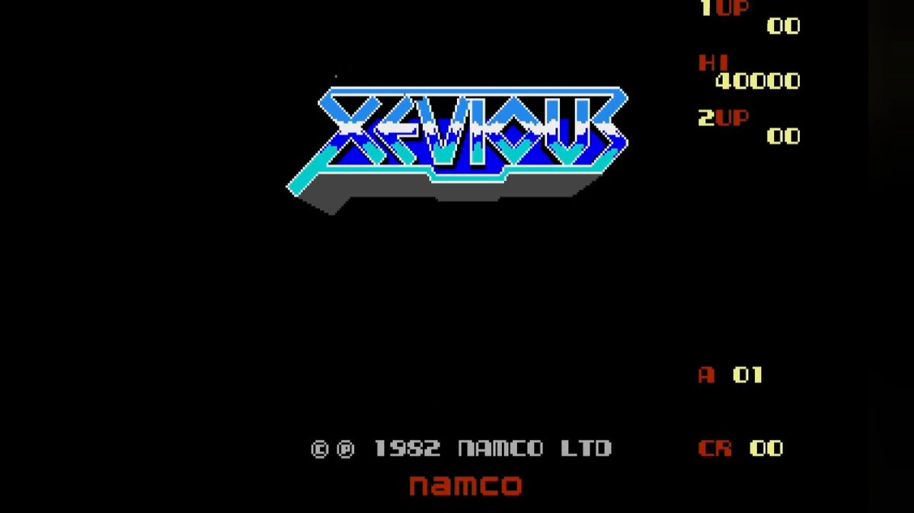
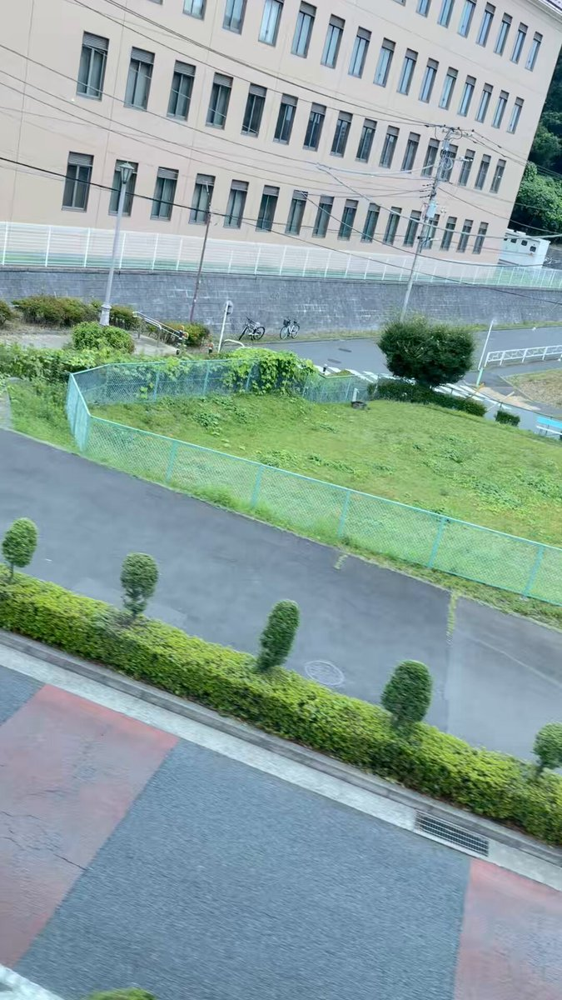
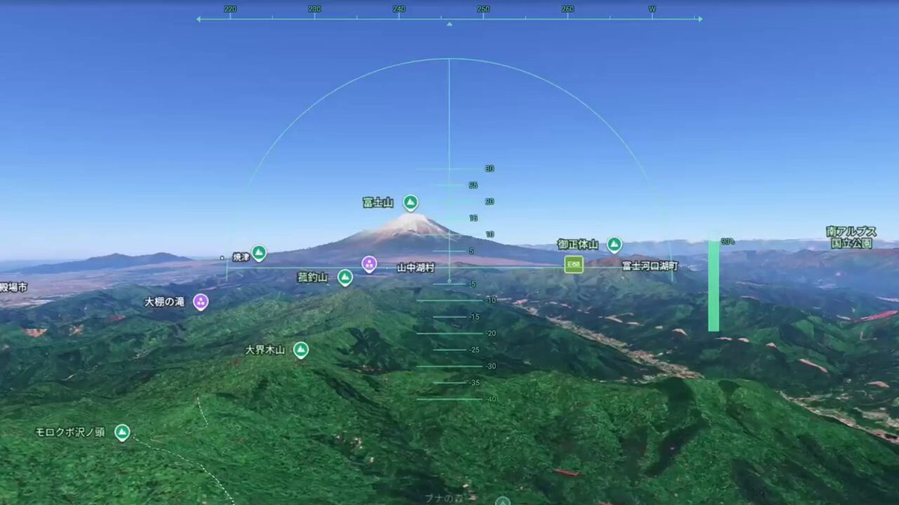
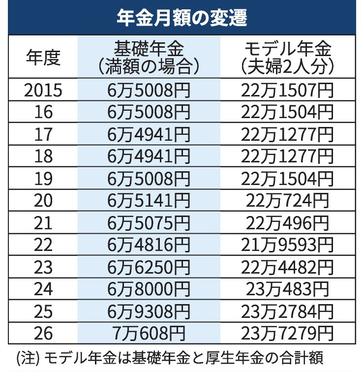
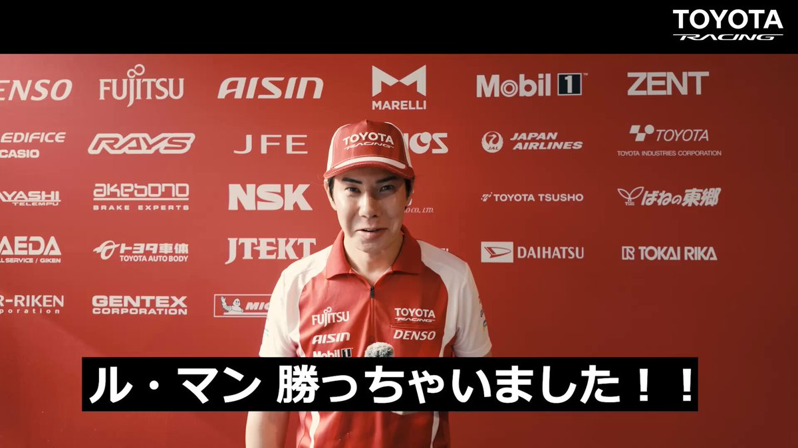
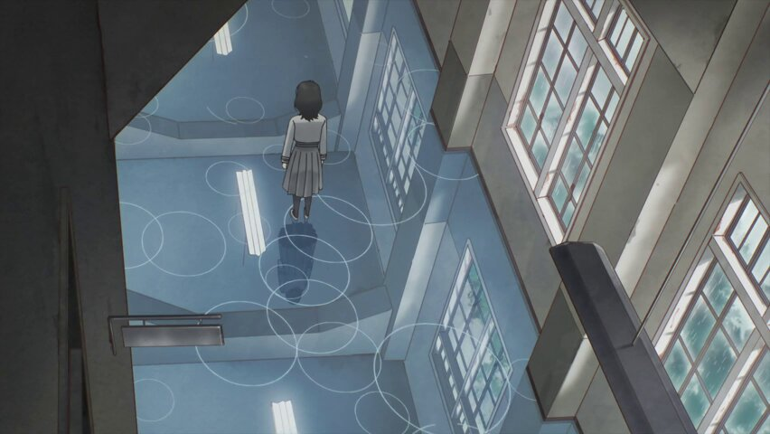
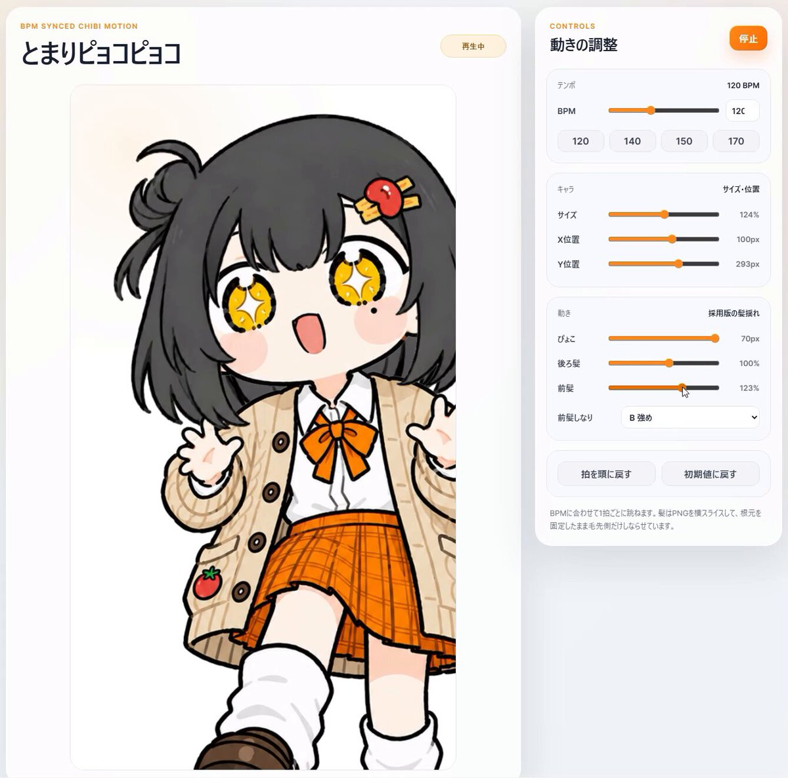
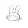
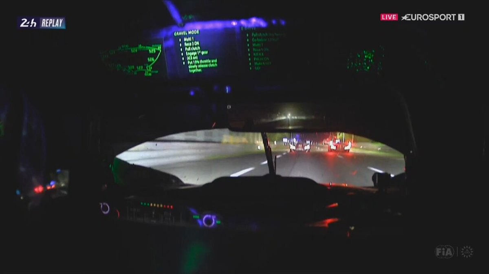

とっても素敵な絵……
タイムライン要約
今日のまとめ
このタイムラインから要約した箇条書きを3点作成しました。
* **ゲーム業界の活況と高額取引:** 未開封のNES『スーパーマリオブラザーズ』が約4.8億円で落札され、ビデオゲーム史上最高額を記録。その他、『S.T.A.L.K.E.R. 2』の大型DLCや『EA SPORTS FC 26』の同時接続数更新、Steam Next Festでの多数の新作発表など、ゲーム関連の多様な情報が展開された。
* **AIとテクノロジーの進化・社会実装:** AIセキュリティの基礎を学べるコースがリリースされ、Sakana AIが初の商用プロダクト「Marlin」を発表。また、Google検索におけるAI概要の表示設定や、企業のAI活用を支援する新職種「FDE（フォワード・デプロイド・エンジニア）」の求人急増など、AI技術の進展とその社会実装に関する動向が注目されている。
* **ビジネス戦略と採用活動の変化:** ラピダスが英国の半導体センターと連携し顧客開拓を目指し、NECは英国防衛大手と能動的サイバー防御で協業するなど、日本企業の国際的な連携が進む。国内ではインターンシップが実質的に本選考の一部として機能し始め、採用活動の早期化が顕著になっている。
* **ゲーム業界の活況と高額取引:** 未開封のNES『スーパーマリオブラザーズ』が約4.8億円で落札され、ビデオゲーム史上最高額を記録。その他、『S.T.A.L.K.E.R. 2』の大型DLCや『EA SPORTS FC 26』の同時接続数更新、Steam Next Festでの多数の新作発表など、ゲーム関連の多様な情報が展開された。
* **AIとテクノロジーの進化・社会実装:** AIセキュリティの基礎を学べるコースがリリースされ、Sakana AIが初の商用プロダクト「Marlin」を発表。また、Google検索におけるAI概要の表示設定や、企業のAI活用を支援する新職種「FDE（フォワード・デプロイド・エンジニア）」の求人急増など、AI技術の進展とその社会実装に関する動向が注目されている。
* **ビジネス戦略と採用活動の変化:** ラピダスが英国の半導体センターと連携し顧客開拓を目指し、NECは英国防衛大手と能動的サイバー防御で協業するなど、日本企業の国際的な連携が進む。国内ではインターンシップが実質的に本選考の一部として機能し始め、採用活動の早期化が顕著になっている。
NES『スーパーマリオブラザーズ』未開封品が約4.8億円で落札―ビデオゲーム史上最高額に。過去の騒動から価格操作を疑う声も
https://
gamespark.jp/article/2026/0
6/15/167988.html?utm_source=twitter&utm_medium=social&utm_content=tweet
…
ラピダス、英半導体センターと連携 顧客開拓で覚書
ラピダス、英半導体センターと連携 顧客開拓で覚書
NEC、能動的サイバー防御で英防衛大手と協業 政府への導入を共同支援
NEC、能動的サイバー防御で英防衛大手と協業 政府への導入を共同支援
変わるインターンシップの位置づけ 採用活動が実質早期化
https://
nikkei.com/article/DGXZQO
UD091WY0Z00C26A6000000/?n_cid=SNSTW005&n_tw=1781486444
…
「参加学生の情報を本選考で活用できる」。インターンは2023年開催から方針に大きな変更がありました。単なる職業体験ではなく、事実上の１次選考として機能し始めています。
変わるインターンシップの位置づけ 採用活動が実質早期化
「S.T.A.L.K.E.R. 2: Heart of Chornobyl」，大型拡張DLC「Cost of Hope」のストーリートレイラーを公開。DutyとFreedomの対立を描く
https://
4gamer.net/s/G012714.2606
15016
…
2つの新地域が追加されるDLC「Cost of Hope」は2026年夏に配信予定
全国のプレイヤーと優雅なビンタ対決が可能に。「薔薇と椿 〜お豪華絢爛版〜」，オンライン対戦機能を追加するアップデートを6月22日に配信
https://
4gamer.net/s/G065762.2606
15019
…
アップデート記念のコラボカフェも秋葉原で開催
ワールドカップ効果か。サッカーゲーム『EA SPORTS FC 26』Steam同時接続数が歴代最高を更新中―1,960円で買える80%オフセールも
https://
gamespark.jp/article/2026/0
6/15/167987.html?utm_source=twitter&utm_medium=social&utm_content=tweet
…
日本vsチュニジア戦は6月21日13時から！
なんだこれは!? かっこよすぎるAIボイレコ兼翻訳デバイスが、ギズマートにやって来た
ガジェット好奇心に、狙い撃ち。ズキュン。ギズモード発のテックストア、GIZMART（ギズマート）。ガジェットに一家言持つギズモードの中の人たちが「これは良いものだ。マジで」と感じた逸品をそろえた、アリそうでなかったオンラインECサイトです。
gizmodo.jp
「ハムコイ-ハムスターに転生した僕と三姉妹の甘々な日々」，日本時間6月16日にスタートするSteam Next Festに出展
https://
4gamer.net/s/G095243.2606
15020
…
本作は，ハムスターに転生し，ペットの視点で美人三姉妹との日々を楽しめる実写恋愛シミュレーションゲームだ。製品版は7月のリリースを予定している
「～みがある」という言い回しをする人が一部にいるが
「たのしい」に適用すると「たのしみがある」とできて
嬉しいときに「うれしみ」で止める用法と組み合わせると
「たのしみ」で、期待ではなく現在楽しいことを意味する用法が可能なのかな
ProbablyMonstersの新作2本をSGFで体験。「Nekome: Nazi Hunter」は復讐のステルスアクション，「Crimson Moon」は血みどろのゴシックARPG
https://
4gamer.net/s/G101661.2606
15008
…
Bungie， Rockstar，Bethesdaなどの経験豊富な開発者が集う独立系スタジオ。その新作をSummer Game Fest会場のハンズオンでチェック
米イラン合意でも買われぬ円 合意の確度見極め、関心は日米金融政策
米イラン合意でも買われぬ円 合意の確度見極め、関心は日米金融政策
「原神」，ショートアニメ「最後の遺産」を公開。サンドローネ（CV：本多真梨子）に託された最後のものとは
https://
4gamer.net/s/G048621.2606
15017
…
コロンビーナ（CV：Lynn）やアルレッキーノ（CV：森 なな子），シニョーラ（CV：庄子裕衣）と過ごす時間も描かれている
親指をたてて溶鉱炉に沈んでいくfable
「鳴潮」，Ver.3.5で登場するキャラクターを予告。秧秧（ヤンヤン）の別バージョンと思われる「秧秧・玄翎」（ヤンヤン・ゲンレイ）など6名
https://
4gamer.net/s/G063420.2606
15018
…
ほかは「穂穂」（スイスイ），「鎖暝」（サメイ），「景燃」（ジンラン），「清宵」（セイショウ），「心」（シン）の5名
Google検索のトップから「AIによる概要」を一発で消す方法
Google検索のトップから「AIによる概要」を一発で消す方法 | ギズモード・ジャパン
個人的にはS7のラスト4話はやはり何度も見返したくなる。
貝さんさん
@morikai3
STAR WARS CELEBRATION JAPANにて世界で高い評価を得たフィローニ監督・脚本のクローンウォーズ最終章「マンダロア包囲戦」を上映。４部作且つ劇場作品のような構成で制作された章。クローン兵VSマンダロリアン、アソーカVSモール、そしてオーダー66を描くエピソードⅢの舞台裏。 x.com/sw_holocron/st…
100話以上あるクローンウォーズの中でも屈指の人気エピソードな印象>アンバラの戦い
クローン兵主体の話はファン人気高い内容が多いイメージがある。
『ドラクエ』冒険者気分を味わえる「タル型ドリンクサーバー」に注目！メタルホイミンのピンチハンガーなどもプライズ展開
https://
gamespark.jp/article/2026/0
6/15/167986.html?utm_source=twitter&utm_medium=social&utm_content=tweet
…
研究室で昼飯食いながらアニメ見よーってNetflix開いたら『たまこまーけっと』の配信始まっていて、「うわっ！」って研究室の外まで響く声出してしまった。
sakanaディープリサーチが出た
ITmedia NEWS
@itmedia_news
Sakana AI、初の商用プロダクト「Marlin」リリース その実力は？【出力レポート全文掲載】
https://
itmedia.co.jp/news/articles/
2606/15/news015.html
…
ジュエルを買うなら公式WEB SHOPがオススメ！
https://
webstore.game-gakuen-idolmaster.jp
ジュエルがお得
PayPay決済も対応しました
#学マス
【創価学会直伝】中道・いさ進一議員 全国の経営者や個人事業主達に節税手法を公開「スーパーで食材を買っておもてなしすれば経費算入できます」【政治とカネ】
【創価学会直伝】中道・いさ進一議員 全国の経営者や個人事業主達に節税手法を公開「スーパーで食材を買っておもてなしすれば経費算入できます」【政治とカネ】 : ハムスター速報
復刻！親愛度ブーストキャンペーン
対象アイドルは現在STEP3が実装されているアイドル全員！
この機会に今後STEP4実装予定のアイドルも
27話まで進めておきましょう♪
#学マス
十王邦夫のアイドル強化月間 〜星々のきらめき〜
開催期間：6/26 (金) 4:59まで (予定)
対象アイドル：有村麻央・姫崎莉波
※詳細はゲーム内お知らせをご確認ください #学マス
サムスン噂の新モデル「Galaxy S27 Pro」。基本モデルとUltraモデルの間の存在？ バッテリーは5,000mAh？
サムスン噂の新モデル「Galaxy S27 Pro」。基本モデルとUltraモデルの間の存在？ バッテリーは5,000mAh？ | ギズモード・ジャパン
新ガシャ開催中！
SRサポートカード
『ゆずれないもの』
開催期間：6/26 (金) 10:59 まで(予定)
#SUGARFLAVORRippleSignガシャ
異常なまでのロボアニメ愛が詰まった怪作「70年代風ロボットアニメ ゲッP-X」が現代によみがえる【PR】
https://
4gamer.net/s/G098670.2606
07009
…
時報から始まる濃厚なサイクルを摂取し続けると，ゲッP-Xというアニメがテレビで放映されていたような気になってくるし，なんなら，いつのまにか好きになっている。
新ガシャ開催中！
SSRサポートカード
『どーなっちゃうの～？』
開催期間：6/26 (金) 10:59 まで(予定)
#SUGARFLAVORRippleSignガシャ
「アサシン クリード」生みの親が手がけるアクションADV「1666: Amsterdam」開発者映像第1弾を公開。17世紀アムステルダム再現の裏側を紹介
https://
4gamer.net/s/G101369.2606
15013
…
魔術を操るノア・ブルックリンとなり，人間社会に紛れ込んだ悪魔「オリジナルス」を追跡する
AI広告は受け入れられるのか？ 最新調査から見えてきた近未来像
AI広告は受け入れられるのか？ 最新調査から見えてきた近未来像
新ガシャ開催中！
『 #SUGARFLAVOR 』
歌唱：RippleSign
作詞・作曲・編曲：Kai Takahashi
開催期間：6/26 (金) 10:59 まで(予定) #学マス
アニメ部の先輩が後輩に教えることはたった一つ。ハードウェアアクセラレーションをオフにすることだけだ。
新ガシャ開催中！
【SUGAR FLAVOR】有村麻央の
アイドル衣装／髪型をご紹介
開催期間：6/26 (金) 10:59 まで(予定)
#SUGARFLAVORRippleSignガシャ

トランプ氏、ホワイトハウスで格闘技観戦 80歳の誕生日に
トランプ氏、ホワイトハウスで格闘技観戦 80歳の誕生日に
かべさんソラさんご夫妻からいただいた高級中国茶淹れました。澄んだ色、淹れた瞬間から研究室内に溢れ出す高貴な香…これが中国緑茶か。
新ガシャ開催中！
【SUGAR FLAVOR】姫崎莉波の
アイドル衣装／髪型をご紹介
開催期間：6/26 (金) 10:59 まで(予定)
#SUGARFLAVORRippleSignガシャ
「薬屋のひとりごと 後宮異聞録」，正式サービスをG123で開始。主人公・猫猫が自身の知識や調合した薬で事件解決に挑むブラウザゲーム
https://
4gamer.net/s/G093211.2606
15015
…
猫猫と壬氏が登場する「リリース記念PV」も公開された
新ガシャ開催中！
新プロデュースアイドル
【SUGAR FLAVOR】有村麻央
開催期間：6/26 (金) 10:59 まで(予定)
#SUGARFLAVORRippleSignガシャ
文章化が難しいけれど子供の頃から親に連れられて食べていたとか学生時代に友達と食べに行ったとかしていると魂の味になるタイプの店感があってその背景の無い独身社会人が他に選択肢ある中から選ぶ店って感じでは無さそうといった所感
湘南ペンギン
@shonanpen
スガキヤ、中京圏に行ったらご当地ものとして食べるのありだけど関東にあってもわざわざ一人で食べに行くほどではないかなといった存在
スイスの人口制限、国民投票で否決 移民が焦点
スイスの人口制限、国民投票で否決 移民が焦点
みなさん登録されました？
Googleに「お気にのニュース」が表示されやすくなる「優先ソース」なる機能が登場しています。
登録・設定はこちらから
https://
google.com/preferences/so
urce?q=gizmodo.jp
…
優先ソースってなんなん？ 解説
https://
gizmodo.jp/article/prefer
red-sources/
…
写真コンテストの入賞したカエルの写真見て
写真とは？ になったねぇ
その後今度は、「jpg撮って出し」みたいなのが流行って…
写真って表現手段の一つなんだからそれでいいじゃん
出典する土俵さえ間違わなけりゃ目くじら立てなくてイイんじゃないのかなぁ
（本文と写真には関連はありません）
新ガシャ開催中！
新プロデュースアイドル
【SUGAR FLAVOR】姫崎莉波
開催期間：6/26 (金) 10:59 まで(予定)
#SUGARFLAVORRippleSignガシャ
川を引き，生態系を作って眺める自然づくりゲーム「WATERFUL」，2027年内にSteamで発売
https://
4gamer.net/s/G101721.2606
15014
…
砂漠の谷を掘り，水が流れると，川の形や水位に応じて植物が芽吹き，動物たちが集まってくる
アグロヴァルお兄様の効果KIRIMIちゃん.と同じなんだよな。きりみは0だから失敗してもまぁシャケの切り身だし…なんだけど（※個人の感想です）、レベ1で失敗するとかなり痛くない？義賊デッキからしゅまみね外した理由それなので。見逃しているけど山上確認効果持ちいるのかな。
INPEX、水素発電の電力販売 6月中めど公共施設に供給
INPEX、水素発電の電力販売 6月中めど公共施設に供給
新ガシャ開催中！
新Pアイドル
【SUGAR FLAVOR】有村麻央
【SUGAR FLAVOR】姫崎莉波
新サポートカード
どーなっちゃうの～？
開催期間
6/26 (金) 10:59 まで(予定)
#SUGARFLAVORRippleSignガシャ
MrBeast、YouTubeで個人クリエイター初の登録者5億人突破──「人類の半分」に迫る
YouTubeは、人気クリエイター「MrBeast」が世界初のYouTube登録者数5億人を達成したと発表した。本名ジミー・ドナルドソン氏（28）は高額賞金チャレンジや大規模慈善活動で知られ、2022年11月から個人クリエイター首位を維持。5億人達成を記念したライブストリームで「20代でここまで来られたのはYouTubeと皆さんのおかげ」と語った。
itmedia.co.jp
こればっかりは上京してきた人にとってはありがたかったりするのでなにも言えない
世界の管理者として，荒らしユーザーをBANしていくバーチャル白昼夢探索RPG「よまいご」，公式サイトとトレイラーを公開
https://
4gamer.net/s/G101722.2606
15012
…
「OFF」や「ゆめにっき」，映画「パプリカ」のような現実と夢の境界が曖昧な作品から影響を受けている
これか
湘南ペンギン
@shonanpen
確かに文字が破綻することなく4コマ漫画が生成された
手品先輩超えたは神アニメ認定ですからね。
宇宙ステーション建設ローグライト「Stationbreak」を発表。宇宙を侵食する脅威から逃れながら，艦隊を率いて次の星系への脱出を目指す
https://
4gamer.net/s/G101720.2606
15011
…
限られた資源でステーションを建設し，エネルギーや熱，資材，クルーの状態などを管理しながら，次の星系へ移るタイミングを見極める
パー様レベ0でストック1トリガーチェック2回効果偉すぎる。パーシヴァル♡噛んだクラマ吐いて♡（うちわを胸の高さに掲げる）5面埋まっていたらパワー5000だからブラウだったら1レベでも活躍出来るけど、本家はどうなんだろうか。
ずっと板チョコだと思ってたらタオルだった
冷蔵庫にあった、1年半前の結婚式の引き出物→賞味期限を見てみると……「ヤバい！」 まさかの光景に「おもろww」「ツッコミどころが多すぎて」
（記事URLはリプから）
冷蔵庫にあった、1年半前の結婚式の引き出物→賞味期限を見てみると……「ヤバい！」 まさかの光景に「おもろww」「ツッコミどころが多すぎて」（1/2） | ライフスタイル ねとらぼ
『パラノマサイト』ファン必携の一冊
描き下ろし表紙、初公開プロフィール、没案まで“知りたかったこと”が詰まっている
https://
gamespark.jp/arti/wtkRLWJ/
スクウェア・エニックス提供の「公式設定読本」を3名様にプレゼント！
応募方法は
1.
@gamespark
をフォロー
2. 本ポストをRP
するだけ！
┈┈┈┈┈┈┈┈┈┈
『SUGAR FLAVOR』
Official Music Video
本日22時公開予定
┈┈┈┈┈┈┈┈┈┈
→
https://
youtu.be/z2WzTPOIWkE
#学マス #ASOBINOTES
友達100人呼んでもつながるWi-Fi 7アクセスポイント
友達100人呼んでもつながるWi-Fi 7アクセスポイント | ギズモード・ジャパン
大手が勝てぬ地元ピザチェーン 水炊き・ゴマサバ…「福岡の味」前面
【福岡】全国大手がかなわない地元宅配ピザチェーン、九州の食材ふんだんに
湘南ペンギンさんがリポスト
湘南ペンギンがロケランを発射してるAI画像どっかで見たけど見つけられないな
ミサイル落としてくる軍事力があるテロリストの拠点に攻め込むのに、どうして一般隊員も銃火器装備してない手ぶら状態なんだ
80年ぶりに目撃された「ノーザン・ネイティブ・キャット」、リスみたいな外見だった
80年ぶりに目撃された「ノーザン・ネイティブ・キャット」、リスみたいな外見だった | ギズモード・ジャパン
これが子供ができたとなったらかなりご利用なんだけどあいにくそんなイベントが発生する見込みがなくてな…
ぬいポーチに横向きの親指プロップス入れるのいいな。ちびぐるみって胴体小さいからぬいポーチ内で首から下がグラグラして顔が正面向かなくなるの気になっているんだよね。
スガキヤ、中京圏に行ったらご当地ものとして食べるのありだけど関東にあってもわざわざ一人で食べに行くほどではないかなといった存在
スポーツ漫画で死人が出る訳…
それ見た瞬間思いついた作品
築2〜30年頃までは何の問題もないんです
ただ、将来的に禍根を残す火種をばら撒いてる可能性は否定出来ませんけどねw
30年過ぎたら脱出一択。
バカを騙して売りつけよう。
wall |･ω･`)
@Satssy79
合ってるのか未確認だけど、身内間でも共有の不動産の行く末でモメるのを見聞きしてるとマンションの所有権に価値が有るとは思えない田舎民 x.com/kelog21/status…
こんな食べ方あり！？→公式オススメでした
「皿を洗う元気もない」袋を開けて冷凍●●をつっこむだけ→5分後……「ズボラに優しすぎる」パスタソースの使い方に目からウロコ
#創味食品 #ハコネーゼ #PR
▼ 記事を読む 【プレゼントCP情報も！】▼
https://
nlab.itmedia.co.jp/cont/articles/
3871028/
…
このコースでは、生成AIを安全に利用・開発・運用するために必要なAIセキュリティの基礎を、具体例やミニ演習を交えながら体系的に学びます。
最初にAIセキュリティの全体像と、従来のサイバーセキュリティとの違いを整理した上で、LLM、プロンプト、外部AI
「ペルソナ5: The Phantom X」，初音ミクとのコラボを発表。DECO*27さんの楽曲「ゴーストルール」を使用したアニメーションムービーを公開
https://
4gamer.net/s/G069335.2606
15010
…
6月18日21：00から特別番組も配信予定だ
2018年に観音寺サミットやってなかったらこちらも連行されることもなかったと思う
えりんぎ@ゴリラ本丸
@eringi_slipper
やかましいわwwwワカマツヤにもゆゆゆが無ければ連行されてないやんけwww x.com/rok_ca08/statu…
本日、Udemyで新コースをリリースしました。
AIセキュリティ入門 -生成AI・RAG・AIエージェントを安全に使うための基礎-
これに伴い、本日から6/20の12:00まで、公開記念割引（最低価格）をこのコースを含む複数のコースに適用します。
#udemy
新コース「AIセキュリティ入門 -生成AI・RAG・AIエージェントを安全に使うための基礎-」の公開と割引について｜我妻幸長
名店いろいろあるだろうけど結局は地元の安めのタコ焼きをなんとなく食べる時が一番うまいような気がする。タコは小さいぐらいで良い。
今は「出席者の3/4」になったのかな？
前は総議決権の3/4だったから、いない人がいたら詰みでした。
弁護士さんに相談して、修繕積立金の額変更を普通決議で決議出来るようにする規約改定を教えて貰いましたが、その改定自体が特別決議なので結局ダメでした
もう脱出決めてたので私も反対しましたw
くお
@tmpuser0820
その辺、改正区分所有法で改善の兆候があるので要チェック。
区分所有者を特定する努力は金銭面では引き続き残っているものの、総会決議できなくて何もできない事態は大きく改善されています。 x.com/kelog21/status…
ポン☆潤々さんがリポスト
親指プロップスは、ぬいポーチに入れるのにもピッタリ
SNSでバズった推しや、これからバズってほしい推しをアピールしちゃおう
6/21まで受注販売受付中
https://
oyayubiprops.booth.pm
#ぬい撮り #ぬい活 #推し活
湘南ペンギンさんがリポスト
ローカルチェーン店が関東にできるの嬉しい反面旅行の楽しみがなくなってしまう(関東でも食えるしなあと思ってしまう)
Sakana AI、初の商用プロダクト「Marlin」リリース その実力は？【出力レポート全文掲載】
Sakana AI、初の商用プロダクト「Marlin」リリース その実力は？【出力レポート全文掲載】
ニディガはアニメに落とし込むのは上手くない気もするがサブカルの矜持がある。この点は素晴らしい。
不思議な生き物が用意した命がけのゲームに挑むダークファンタジー「Sullyland Nursery Rhyme」，プロモーションムービーを公開
https://
4gamer.net/s/G094498.2606
15007
…
主人公たちは，昼に神への感謝をささげる行事「マレニス祭」の準備をしながら，夜は命がけのゲームに参加していく
朝5時から試合開始とか観れるはずねーだろ
アメリカ人どんだけ早起きなんや
DAZN、日本戦で「音ズレ」が話題に 「音ズレやぱすぎる」「地上波に切り替えた」
DAZN、日本戦で「音ズレ」が話題に 「音ズレやぱすぎる」「地上波に切り替えた」
Threads発「水野美紀祭り」に本人が反応 「何なのーー！」X投稿
Threads発「水野美紀祭り」に本人が反応 「何なのーー！」X投稿
ポン☆潤々さんがリポスト
当館で現在決まっている上映終了予定作品のご案内です m(_ _)m
6/18(木)
『プロジェクト・ヘイル・メアリー』
『ミステリー・アリーナ』
『アン・リー／はじまりの物語(35mmフィルム上映)』（4K DCP上映は継続）
6/19(金)
『超かぐや姫！』
6/25(木)
『映画 正直不動産』
『君のクイズ』
『TOKYO
この画像を出しといて横浜でなく都内にできたら何らかの罪に問われると思う
日経平均一時初の６万9000円台 米イラン合意、全員参加「超FOMO」相場
日経平均一時初の6万9000円台 米イラン合意、全員参加「超FOMO」相場
オタク起床(起床ツイート忘れ)
【6/18(木) 『オンゲキ Chapter7 【WakeUP MakeUP FEVER!】』延長！】
マップを進めると楽曲「いちげき！のテーマ」「アイシング・ドリーム」「Pastel Sprinkles」が先行プレイできるほか、『オンゲキ』のキャラクターたちがゲットできるよ！
https://
info-chunithm.sega.jp/12053/
僕は、石鎚山に登りに来ただけなので
ヤマノススメ婚説あり
六珈＠六七製作所
@Rok_Ca08
ワカマツヤ婚と言い続ける友奈ちゃんであった x.com/eringi_slipper…
【まもなく終了！】
アイリーンの 謎解明！ビンゴミッションは6月19日10:59まで開催中
ミッションをクリアして
SS[月下のハイドアンドシーク]アイリーン・レドメイン
合計2500クォーツ
SS確定ガチャのカケラ10個
など豪華報酬をGETしよう！
#ヘブバン
「らーめんシミュレーター」，Steamで6月22日に配信決定。100種類以上の具材で理想の一杯を作れる
https://
4gamer.net/s/G089546.2606
15002
…
「焼肉シミュレーター」の開発チームによる新作。マシマシモードや早食いモードも収録
ポケットペアの協力型ダークファンタジー探索ゲーム「ビジョンクエンチ」，Steam Nextフェスでデモ版を配信開始
https://
4gamer.net/s/G096462.2606
15005
…
迷宮に潜入し，かつて企業のキャンペーンで配布された伝説の「懸賞コード」を探し求める
Access Accepted第864回：マジックは戻ったのか？ 夏の祭典，Summer Game Fest 2026にあった違和感
https://
4gamer.net/s/G003691.2606
12035
…
“夏のゲームの祭典”が閉幕した。現地ロサンゼルスの取材を終えた今，イベントを振り返ってみたい
［プレイレポ］「Die Deep」の魅力は，その“フェア”な戦闘システムにあり。ローグライトアクションを煮詰めて作られたピュアなバトルの結晶【PR】
https://
4gamer.net/s/G100713.2606
09043
…
1点に笑って1点に泣く。バトルを愛する人であれば魅了される濃密さがある
三世代が一堂に会する奇跡
千円札を財布から出したら……「あれ！？」 激レアな光景が「うおおw」「わー凄い！！」と356万表示
（記事URLはリプから）
千円札を財布から出したら……「あれ！？」 激レアな光景が「うおおw」「わー凄い！！」と356万表示（1/2） | おかね ねとらぼ
ポン☆潤々さんがリポスト
【ブックオフ立川駅北口店WS買取表更新】
WS最新弾GA文庫のSRやRRの買取表更新しました
なお21日まで当店トレカ買取キャンペーンも開催中ですのでここからさらに買取金額が10％アップする大チャンス！
数量限定＆期間限定となります、よろしくお願いします！！
#ws2tcg
#ヴァイスシュヴァルツ
コンボの連鎖が気持ちいい！アニメスタイルのオープンワールドARPG「ドラゴンソード：アウェイクニング」，公開中のデモ版で爽快バトルを味わおう【PR】
https://
4gamer.net/s/G099933.2606
09029
…
Steamにて6月23日までデモ版が配信中。7月のリリース前に体験してみよう
米国ホワイトハウス、『ペルソナ5』の総攻撃演出をトランプ大統領に置き換えた映像を投稿。相変わらず「ドラゴンボール」「遊戯王」からの無断利用も
https://
gamespark.jp/article/2026/0
6/15/167984.html?utm_source=twitter&utm_medium=social&utm_content=tweet
…
川口"k-shi"貴志 / ゲームの音響や触覚でUXを考える人さんがリポスト
ゲームの音声、聞き取りやすさ比べ
BGMとボイスについて、ADX で複数パターン作ってみたのでス！
どのパターンが聞き取りやすいと感じたか、ぜひ教えてほしいのでスは

ポン☆潤々さんがリポスト
【シンデレラ】「新潟市・佐渡市」×「アイドルマスター シンデレラガールズ」との コラボイベント“がたます”の開催が決定しました！ #imas_cg #デレマス #がたます #idolmaster
【シンデレラ】「新潟市・佐渡市」×「アイドルマスター シンデレラガールズ」との コラボイベント“がたます”の開催が決定しました！
ポン☆潤々さんがリポスト
6/15は千葉県民の日＆栃木県民の日
千葉＆栃木出身のアイドル達のお仕事頑張ってる！な姿をセレクトしました
アートグラフィー
https://
selepo.me/event_96/
グラフィカルボックス
https://
selepo.me/event_95/
#理由あってセレポ もあと２週間余り、お忘れなく！
#水嶋咲 #木村龍 #岡村直央
演劇リーグ：TRIPLE CAST
第31回演劇リーグ：TRIPLE CAST開催中です
今回の楽曲は、
「Drawing World」になります
開催期間は6/27(土)24時までになります
#ユメステ #ワーダイ #ワールドダイスター
【6/18(木) 『maimai でらっくす Part2』延長！】
マップを進めると楽曲「プリズム△▽リズム」「ARAIS」が先行プレイできるほか、『maimai でらっくす』のキャラクターたちがゲットできるよ！
https://
info-chunithm.sega.jp/12053/
ITmedia NEWSさんがリポスト
Sakana AI、初の商用サービスはリサーチ特化 「Deep Research」との違いは？ 後発で“ベンチマークも追わない”ワケ
Sakana AI、初の商用サービスはリサーチ特化 「Deep Research」との違いは？ 後発で“ベンチマークも追わない”ワケ
PC版「棋桜（KIOU）」，Steamでリリース。「棋桜AI」を搭載し，初心者から有段者まで幅広いレベルのプレイヤーが楽しめる将棋ゲーム
https://
4gamer.net/s/G101716.2606
15006
…
スマートフォン版（iOS / Android）も配信中だ
【連邦更新】
ナムコの大名作「ゼビウス」が、セガの名機「メガドライブ」に勝手移植!!
なんと本作は、アーケード版を忠実に再現した本格作品
もし当時「メガドラ版 ゼビウス」が発売されていたら…という夢を叶えてくれる、レトロゲーム好きにはたまらない逸品だッッ!!
https://
renpou.com

２年金利高止まり、「政策金利上げ半年１回・1.75％まで」想定
2年金利高止まり、「政策金利上げ半年1回・1.75%まで」想定
ポン☆潤々さんがリポスト
◤ヴァイスシュヴァルツ 今日のカード◢
6月26日(金)発売
ブースターパック グランブルーファンタジー
ノーマルカードを公開！
商品情報はこちら！
https://
ws-tcg.com/products/gbf_b
p/
…
#グラブル #WS
ポン☆潤々さんがリポスト
◤#ヴァイスシュヴァルツ今日のカード◢
6月26日(金)発売
ブースターパック グランブルーファンタジー
パラレルカードを公開！
商品情報はこちら！
https://
ws-tcg.com/products/gbf_b
p/
…
#グラブル #WS
ローカルチェーンの関東進出多いな
データカードダス「アイカツ！アンコール」，キービジュアルを公開。橋本環奈さんがレジェンドコラボパートナーに就任
https://
4gamer.net/s/G100393.2606
15003
…
キービジュアルには橋本さんが起用されている。今後コラボも実施予定で，詳細は追って公開されるという
キオクシアＨＤ株価が９万円肉薄 世界で半導体株上昇、韓国株も高い
キオクシアHD株価が9万円肉薄 世界で半導体株上昇、韓国株も高い
「シュール」「不完全燃焼」「閲覧注意」。『まんが日本昔ばなし』公式サイトのジャンル分けが画期的
「シュール」「不完全燃焼」「閲覧注意」。『まんが日本昔ばなし』公式サイトのジャンル分けが画期的 | ギズモード・ジャパン
偶然か必然か
「エモすぎて鳥肌」 嵐、ファン推測“FC終了日の意味”が話題 「伏線回収しすぎてて、泣く」「偶然でも必然でもどこまでも嵐」
▼記事を読む▼
https://
nlab.itmedia.co.jp/cont/articles/
3879500/
…
ベネッセ、セガの「ぷよぷよ」で漢字学習 進研ゼミ受講生向けゲーム
ベネッセ、セガの「ぷよぷよ」で漢字学習 進研ゼミ受講生向けゲーム
ディズニーさん 人間だけでなく車の駐車料金も値上げ
ディズニーさん 人間だけでなく車の駐車料金も値上げ : ハムスター速報
『ゼルダの伝説 時のオカリナ』リメイク版は「デザイン刷新」？北米サイトに説明記載も、ひっそり修正―わずかなヒントからファンが考察
https://
gamespark.jp/article/2026/0
6/15/167983.html?utm_source=twitter&utm_medium=social&utm_content=tweet
…
スマホのシャッター音消せない問題なぜ日本だけ？って疑問はあれど、とはいえシャッター音あったとて困らないっちゃ困らないから別に良いっちゃ良い。っていう絶妙な温度感。逆にアメリカは無断録音が違法で事前通知を消せない問題もあるし、この辺は得手不得手というか、国ごとの文化だよねって程度
アナログ・デバイセズ日本法人代表「EV停滞、当社に影響少ない」
アナログ・デバイセズ日本法人代表「EV停滞、当社に影響少ない」
日英イタリア、戦闘機開発の官民契約にめど BAEやレオナルド参画
日英イタリア、戦闘機開発の官民契約にめど BAEやレオナルド参画
中村敬斗「狙い通りのゴール」 小川航基「みんなの勝ち点1」
【サッカーワールドカップ】中村敬斗「狙い通りのゴール」 小川航基「みんなの勝ち点1」
サッカー日本、オランダに価値あるドロー 失点にも折れないタフさ
サッカー日本、オランダに価値あるドロー 失点にも折れないタフさ
貝さんさんさんがリポスト
タツノコプロ、2026年3月期決算は売上高49.9％増の20億7300万円、営業益9.9％減の2700万円
※官報に決算公告が出ていたので追記しました。最終益は52.3％増でした。
https://
gamebiz.jp/news/426085
#タツノコプロ
ニンダイ人気がスゴい！2026年6月前半ゲームイベント最大同時視聴者数「Nintendo Direct」が380万人で首位―『時オカ』リメイクトレイラー再生数もトップ
https://
gamespark.jp/article/2026/0
6/15/167982.html?utm_source=twitter&utm_medium=social&utm_content=tweet
…
ゲーム業界向けにイベントの視聴データなどを分析する「LevelUp」が公開したデータによるものです。
アークナイツ開発元の協力プレイ専用アクションゲーム「ポッピュコム」がNintendo Switch Onlineの「いっせいトライアル」に登場，6月17日から23日まで
https://
4gamer.net/s/G094538.2606
15004
…
あわせて35％オフのセールも実施予定。6月17日12：00から7月1日23：59まで
AI時代の新花形職種「FDE」 、アメリカで年収3200万円
https://
nikkei.com/article/DGXZQO
CD11BKW0R10C26A6000000/?n_cid=SNSTW005&n_tw=1781483043
…
企業のAI活用を支援する「フォワード・デプロイド・エンジニア（FDE）」。アメリカでは求人が1年で約11倍に急増しました。AIの普及でエンジニアが不要になるとの見方は覆されています。
米では年収3200万円の「FDE」 、AI時代の新花形職種が映す課題
湘南ペンギンさんがリポスト
関東の皆さまお待たせしました
皆さまからたくさんのご要望をいただき
今秋 スガキヤ は20年ぶりに
関東にオープンします
#スガキヤ関東出店
ポン☆潤々さんがリポスト
＼\ 香る大人の和バーガー /／
テリヤキバーガーを卒業したあなたに
ぜひ！「大人の照り焼きバーガー」
発売を記念し、
店頭で使えるカード1,000円分が当たる
【応募期間】
6月16日まで
【応募方法】
①
@Freshness_1992
をフォロー
② この投稿をリポスト
③ 当選者へ6月19日までにDM通知
【吉田輝和の絵日記】90年代の日本をイメージしたコンビニでアルバイト。品出し・レジ打ちしながら接客も！『inKONBINI: One Store. Many Stories』
https://
gamespark.jp/article/2026/0
6/15/167981.html?utm_source=twitter&utm_medium=social&utm_content=tweet
…
ポン☆潤々さんがリポスト
＼大好評販売中／
『倍切り！うなぎの蒲焼き』 が 登場～
詳しくはこちら
https://
akindo-sushiro.co.jp/campaign/detai
l.php?id=4422
…
すしに真っすぐスシロー
抽選で名さまにお食事券が当たる
@akindosushiroco
をフォロー
この投稿をいいね＆リポスト
#スシローの日
駅でも受けられる遠隔診療 人口減社会を救う切り札に
駅でも受けられる遠隔診療 人口減社会を救う切り札に
3台同時に充電OK。ケーブルとコンセント一体型のモバイルバッテリー
3台同時に充電OK。ケーブルとコンセント一体型のモバイルバッテリー | ギズモード・ジャパン
IEは”””スタミナ”””が最も懸念してる
基本的人権と渡辺曜（本人）さん、あなたやっぱりやってますよね？
台湾ASE、半導体「後工程」で先端量産ライン AI需要に対応
台湾ASE、半導体「後工程」で先端量産ライン AI需要に対応
馴染みのショップさん「IDCにチャレンジする人は基本的にプロなので、”スキルができていることは大前提”です」とのこと
ただIDCに合格してもIEに落ちるとIDC受け直しと聞いてビビってます
夷（ゑびす）@『アニメ聖地移住』集英社インターナショナルさんがリポスト
「火垂るの墓」7月15日に再びNetflixで配信 感想文企画や学校での上映会サポート施策も
https://
natalie.mu/comic/news/676
191
…
#ジブリ
Google、「Gemini」悪用の中国系サイバー犯罪組織を提訴――2週間で250万通の詐欺メッセージ
Google、「Gemini」悪用の中国系サイバー犯罪組織を提訴——2週間で250万通の詐欺メッセージ
PADIダイブマスターと潜水士（国家資格）を持っているので、いよいよOWSI（インストラクター資格）にチャレンジしようかと検討中。
Web版「Google Earth」にフライトシミュレータ機能を追加。ブラウザ上で世界中の空を無料で飛行可能に
https://
4gamer.net/s/G004283.2606
15001
…
デスクトップ版で利用できた機能をWeb版へ移植。アカウント登録なしで利用できる
視察旅行の是非はともかく、
「一泊11万円」のホテルについては、もう海外では「普通（決して高級すぎはしない）」価格なんじゃないかと思いました。
ライブドアニュース
@livedoornews
【会見】「海外旅行は続けます…あ、海外活動です」議会のハワイ視察で1泊11万円のリゾートホテル、説明中に言い間違え
https://
news.livedoor.com/article/detail
/31533233/
…
福岡県議会の議員らによる高額な海外視察が問題視されている中、議長が記者会見を実施。海外活動に関して「その考えを一切変えることはない」とした。
うひー…。その場にいたら胃をやられそう…。
ライブドアニュース
@livedoornews
【北中米W杯】天皇皇后両陛下、オランダ国王夫妻とオランダ戦をテレビ観戦
https://
news.livedoor.com/article/detail
/31551756/
…
オランダ王室が提供した写真には、日本代表のサムライブルーのタオルを首からかけられた両陛下と、オランダ代表のオレンジ色のタオルをかけたウィレム・アレキサンダー国王夫妻が笑顔で写っている。
休みの日に新しい通勤ルートの電車に乗ってたら視界になんか変なものが写った気がして頭おかしくなったのかと思い、引き返して確認したらちゃんと存在してた（ラスト5秒です）

ぼくはCを初めて勉強した時、猫でもわかるC言語を読んで何もわからず本に向かって威嚇してました
これすき
これ、BIGはただ『大きい』だけではなく、ポジティブな意味合いがたくさんあるみたいなので、そこもウケた原因なのかな？

FOX 4 NEWS
@FOX4
テキサスは素晴らしい、すべてが大きい
明日着てく服を探してるのに引越しの荷物を開けて開けてもおもちゃとコンピュータしか出てこなくてマジギレしてる
『モンハン』にふぉるめーしょんが狩猟解禁！『ワイルズ』加工屋のジェマや、人気モンスターなど全31種
https://
gamespark.jp/article/2026/0
6/15/167980.html?utm_source=twitter&utm_medium=social&utm_content=tweet
…
引っ越し、新居に段ボールを120箱くらい運び込んでもらったんですが、その中に1つだけ服を詰め込んだやつが見つからずこのままだと明日履くパンツがない
貝さんさんさんがリポスト
【訃報】アニメーション監督の森田浩光さん死去 『コボちゃん』『サザエさん』など名作手がける
https://
news.livedoor.com/article/detail
/31553245/
…
株式会社エイケンが「6月4日にご逝去されました。2024年3月に、ご勇退されるまでの13年の長きにわたり第一線でご活躍され、制作現場をご牽引いただきました」と伝えた。
アニメーション監督、森田浩光さん死去 「コボちゃん」「サザエさん」など名作多数手がける
「Dead by Daylight」，10周年を記念する新展開を発表。ジェイソン参戦の新チャプターが6月17日リリース，映画版の監督も決定
https://
4gamer.net/s/G033338.2606
14001
…
ジェイソン参戦は6月17日。映画版はセーブルとミカエラの友情が物語の軸になる。
／
開催終了まで残り3日！
ジュンク堂書店札幌にて
#ヘブバン 文化祭開催中！
開催期間：6/18(木)まで！
＼
法被を纏った31Aの描き下ろしイラストグッズなどが登場
▼詳細はこちら
https://
tokyoanimecenter.jp/event/popup-hb
r/
…
ぜひ皆様お立ち寄りください！
【中道改革連合】デマ拡散と政治資金規正法違反疑惑で炎上中のいさ進一議員 疑惑に一切答えない長文ポストを投稿してしまいツッコミが殺到中【疑惑は深まった】
【中道改革連合】デマ拡散と政治資金規正法違反疑惑で炎上中のいさ進一議員 疑惑に一切答えない長文ポストを投稿してしまいツッコミが殺到中【疑惑は深まった】 : ハムスター速報
新居の自室が14畳になったのでおもちゃが無限に買える無敵になった
名古屋行く用事がないな(´･_･`)
NEC、サイバー防御で英防衛大手BAEと連携 日英首脳合意で
NEC、サイバー防御で英防衛大手BAEと連携 日英首脳合意で
『TFT』専用クライアントが10月にリリース―エンジンを「Unreal Engine」へ移行、将来を見据えて地盤固め
https://
gamespark.jp/article/2026/0
6/15/167979.html?utm_source=twitter&utm_medium=social&utm_content=tweet
…
さたけさんがリポスト
ドムドム、名古屋のここに作ってるぞう
7月28日（火）グランドオープン
ドムドムハンバーガー 大須万松寺通店
近隣のみなさま、よろしくお願いいたします
詳細はこちら
https://
domdomhamburger.com/topics/7429.ht
ml
…
日本経済新聞 電子版（日経電子版）さんがリポスト
東京湾口に「第2のアクアライン」 半島脱却の夢、問われる投資効果
https://
nikkei.com/article/DGXZQO
CC06AQP0W6A200C2000000/?n_cid=SNSTW005&n_tw=1781480366
…
房総半島と三浦半島をつなぐ構想は、長く凍結状態が続いています。千葉県などが早期建設を求めているものの、費用は未知数。東京湾アクアラインの総事業費は1兆4400億円でした。

ヘブンバーンズレッド × ペルソナ５ ザ・ロイヤル コラボフェア in アニメイト開催中！
ゆーげんさん描き下ろしのキービジュアルや
ゲームに登場するイラストを使用したグッズが登場中！
6/21（日）まで
▽詳細はこちら
https://
animate-onlineshop.jp/contents/fair_
event/detail.php?id=114617
…
#ヘブバンペルソナ５ザロイヤルコラボ
AIの自動開発が進むと、あらゆるアプリが無駄に豪華になっていくな⋯ 自動運転やデジタルツインを見据えると、Google Earthは「統合汎用のドライブシミュレーター」になってくんやなかろうか。

電ファミニコゲーマー
@denfaminicogame
ウェブ版「Google Earth」にて“フライトシミュレータ機能”が全ユーザーで利用可能に。インストール不要で簡単に空の旅が楽しめる
https://
news.denfaminicogamer.jp/news/260614j
建物や地形などが3Dで表現された世界を自由に飛行可能。SNSでは「操作が難しいけど面白い」「めちゃくちゃ時間が溶ける」など話題に
「シューイチ」が中丸雄一に縦読みメッセージ投稿か 「泣いてます」「ハートにも縦読みにも愛しかない」と392万表示 （1/3） | エンタメ ねとらぼ
貝さんさんさんがリポスト
日経新聞の（元記事は日経マネー）のシリーズ「コンテンツ株 次の主役を探せ」が良いです。
第3回は東宝と東映アニメーション
”配給のみなのか、製作にも携わっているのかによって業績への寄与度が変わる”
これ重要
映画・アニメ株の最新トピック 次のゴジラは北米を意識か
日経平均3000円高、一時初の6万9000円台 米イラン合意を好感
日経平均3100円高、一時初の6万9000円台 米イラン合意を好感
あと加えてCHAdeMOアダプターが現状買えないというのも大きかった。スーパーチャージャーが近くにあればいいが、遠出する時にSAで充電したいってなったら現状アダプターは必須だからね。
「ベイブレード」×ローグライク・Y2Kライフシム『Slayblade』デモ版Steam配信中。爆弾まみれのイリーガルなバトルも
https://
gamespark.jp/article/2026/0
6/15/167978.html?utm_source=twitter&utm_medium=social&utm_content=tweet
…
エネルギー危機を解決できたらしい「スレイブレード」を父が開発、しかし失踪し5年。世界選手権で優勝し真相を探る。子どものころにこの漫画読んだ気がする。

私がテスラを購入候補から外したのが修理代金の高さとこの手のアフターサポートをする拠点の少なさだったからな。確かに出張サポートもあるが、大きな破損は持ち込まないといけないわけで。ディーラーが無いというのが最大の弱点になるんだよね。
この神聖なTLでサッカーの話をしたオタクへの処遇を検討中
テスラのガラス破損、メーカーが責任取らないってことでかなり盛り上がってきてるな。個人的にも飛び石や物が当たって破損って感じではないのでユーザーの自己責任とするメーカー対応はちょっと無いなと思う。
息を吹きかけると文字が浮かび上がるデータチップ
息を吹きかけると文字が浮かび上がるデータチップ | ギズモード・ジャパン
他人にオルカンを勧めながら、自分はこっそりエヌビディアを買うやつじゃん。
AI「実務上はAと答えるのが正解ですが、Bが問題になる可能性はほぼないので自分で100万円賭けるならBですね」
みたいな回答してきた。ディフェンスが固い法務部みたいなムーブしよる。
深津 貴之 / THE GUILD, note
@fladdict
GPTさんに、「AとBどちらが正しい？」と聞いたらAと言うくせに、「ABのギャンブルがあったらどっちにかける？と聞いたらBと答える」という、微妙な案件を観測した。ユーザーにリコメンドするのと自分の選択が乖離してるじゃねーか。
日経平均、上げ幅2000円超 米イラン戦闘終結合意を好感
日経平均、上げ幅2000円超 米イラン戦闘終結合意を好感
米イラン、戦闘終結の覚書で合意 トランプ氏「ホルムズ開放を承認」
米イラン、戦闘終結の覚書で合意 トランプ氏「ホルムズ海峡開放を承認」
2031年に地球～火星の最短飛行ルート出現！ 5か月で往復できるチャンスを活かせるか？
2031年に地球～火星の最短飛行ルート出現！ 5か月で往復できるチャンスを活かせるか？ | ギズモード・ジャパン
廉価版Apple Vision Pro、発売は2028年後半以降になるってウワサ
廉価版Apple Vision Pro、発売は2028年後半以降になるってウワサ | ギズモード・ジャパン
日経平均株価、続伸で始まる 米イラン合意で急伸
日経平均株価、続伸で始まる 米イラン合意で急伸
あの祭り、地元では一定数のアンチがいるとかで。＞RP
DAZN「月980円」問題、謝罪も炎上続く “誤解を招く”表示はいまだ継続
DAZN「月980円」問題、謝罪も炎上続く “誤解を招く”表示はいまだ継続
日本経済新聞 電子版（日経電子版）さんがリポスト
「中学レベルの数学解けない」米名門大で増加 学力試験への回帰探る
「中学レベルの数学解けない」米名門大で増加 学力試験への回帰探る
GoogleピチャイCEO「困難な道選んで」 米大で講演、AIには触れず
GoogleピチャイCEO「困難な道選んで」 米大で講演、AIには触れず
Notionにメモ書きしました
26/06/14 自由という不幸
独身FIREした人達が完全に自由で悠々自適な生活を手に入れたというのに何故か不幸になって身を持ち崩しがちとか言う話は以前から不可解に思っていた。
six-loganberry-ba7.notion.site
こういうビルは上から見ると屋上がクーリングタワーだらけなんだよねぇ。
電波やくざ
@denpa893
あのビル
中層階から低層階まで窓無いし怪しいビルだな
AVITAMINOSEさんがリポスト
速報：ドイツ、イタリア、フランス、英国がイランに対する制裁解除の準備を表明
ライブ更新：
https://
aje.news/y3hc1w?update=
4659858
…

日本代表、オランダに値千金ドロー 現地サポーター「やってくれた」
日本代表、オランダに値千金ドロー 現地サポーター「やってくれた」
AVITAMINOSEさんがリポスト
最終2画面を静止画で。
南の雨はヒマラヤ南北由来の湿乾偏西風の収束域とベンガル湾からの湿った空気による雨。
日本海の雨雲は先日の激しい雷雨より3℃前後高めの寒気を伴った寒冷渦南東側の不安定な大気による雨。
天気図上は前線が目立つけど新潟沖の気圧の谷も見逃せない。
Windyチェックのお供に
大相撲パリ公演、大関琴桜が総合優勝 千秋楽
大相撲パリ公演、大関琴桜が総合優勝 千秋楽
Torishima / INTPさんがリポスト
Fableがいつ戻るのか（戻らないのか）で、ここから数日間の動き方も変わるので、AI使いまくってる人ほど、みんな行動が停滞してる気がする。
なんだかんだ、一般に公開された最高性能の最新AIが、どんなに金を払っても使えなくなる体験って、歴史上で初めてだもんな。
衒学的なのが悪いことだと受け取っているオタクがいるが、そんなことはない。
ケーキを食べて甘いというのがケーキへの否定だろうか?サブカル大学生が衒学的たらんとすることは極めて当然である。あとは受け取る個人が甘いのが好きか嫌いかの話に過ぎない。
ふぇむ(せかんど！)
@000Amaurot
各キャラが衒学的であるのではなく、作者が体系的でない要素を作品に散りばめていることが衒学的であると言われていると考えるべきだ。そして平均的な大学生から見れば純粋理性批判を愛読書とする理系の大学一年生というのは外れ値である。
シカゴ市場で米ドル需要急増 ちらつく「米国例外主義」復活
シカゴ市場で米ドル需要急増 ちらつく「米国例外主義」復活
クーラーボックスはもういらない。マイナス18度に冷えるポータブル冷蔵庫が「2万円台」 #BuyPR
クーラーボックスはもういらない。マイナス18度に冷えるポータブル冷蔵庫が「2万円台」 | ギズモード・ジャパン
Geminiの共有機能が進化。チャットやファイルを安全・簡単シェア可能に
Geminiの共有機能が進化。チャットやファイルを安全・簡単シェア可能に | ギズモード・ジャパン
充分にあり得たんだよ。
まず住民同士が疎遠だった。
自分が理事長になってから住民のLINEグループを作った。
ようやく意思疎通が出来て、各々悩み抱えてることが可視化されて、総会に皆出るようになった。
それでも3/4はハードルが高すぎた。
死ぬまでこのままにしておいて欲しいって高齢者とかね
さすらうもの
@daffodi85280015
極端な意見だと思う。マンション理事会が丁寧な運営をしていれば特別決議を通すのは難しくはない。総会で文句を言いたがる人はいるが、普通は書面（議決権行使書や委任状）で十分な賛成票が得られる。住民なら修繕の必要性は理解するし、投資目的の人も売却価格に関わることだと知っている。 x.com/kelog21/status…
ゲーム「オープンワールドです！クラフト要素もあります！自由です！」 ワイ「じゃあいいです・・・」
ゲーム「オープンワールドです！クラフト要素もあります！自由です！」 ワイ「じゃあいいです・・・」 : ハムスター速報
昨日は朝から夜まで、ずっとnote用のテキストを書いていた
何がまずいって、我が家のノートPCでnoteの編集をしていると、5分もしないうちにファンが唸り、その1分後にはnoteの編集画面すらまともに動かなくなるという事
裏でどのような処理が行われているかは不明だが、半分も仕上がらなかった
テスラさんがリポスト
死人が出るスポーツ漫画はだいたい好きです
shiro@焼肉たべさせて下さい。
@nikutaberuru
スポーツ漫画で死人が出る訳ないだろ。
#落花生 #アップ738 これでいいのか？
ヒントではなくポロリ？ #アップ738
ちなみに買った2枚はこんな感じ
エコロデュエルの草野太郎騎手のサインは結構レアでかわいい
#トゲトゲ競馬部
ユウマボウズ
@Gc5RLsVaaV12052
サッカーW杯の興奮冷めやらぬ中、夜勤を終えて帰宅しました。
昨日でチッタのヒルバレーが閉店しましたね…。思い出に浸りながら仕事休憩にストロベリーポップコーンを食べました。
そして、今日から全国のコンビニでこれが販売されました！
トゲトゲ競馬部の皆さんは買いましょう！
【朗報】日本初戦におけるBESTケイスケホンダ語録、久保選手が膝を痛めた際に突然カメラで抜かれた謎の外国人に対する『…誰？』に決定
滝沢ガレソ
@tkzwgrs
【悲報】サッカー日本代表・瀬古(せこ)選手を応援するための横断幕、角度によっては非常にまずいと話題に
(:
http://
x.com/hakuraku8969)
こういうのにクレーム電話する暇な人はなにを言われてもやり続けるので、もはや社会として無視一択でいいと思う。救急救命士さんの投稿。「暑くなってくると各消防本部からこんなことがポストされます。『救急隊員の水分補給にご理解を！病院内やコンビニで水分を購入することがありますがご理解をお願
「水ぐらい飲ませて」救急隊員のコンビニ立ち寄りを“通報” 夏の水分補給ピンチ 現役救命士が訴え（ENCOUNT） - Yahoo!ニュース
「水ぐらい飲ませて」救急隊員のコンビニ立ち寄りを“通報” 夏の水分補給ピンチ 現役救命士が訴え（ENCOUNT） - Yahoo!ニュース
毎日の生活で「だらだらする」というのはないんだけど、意図的になにもしないで眼を閉じて横になる短いひとときを二回作っています。Voicyで語りました。↓
日々の暮らしで「無」になる時間が2回ある | 佐々木俊尚「毎朝の思考」/ Voicy - 音声プラットフォーム
日々の暮らしで「無」になる時間が2回ある | 佐々木俊尚「毎朝の思考」/ Voicy - 音声プラットフォーム
いるか@心が酒びたっているんださんがリポスト
刑事裁判で検察官が出してきた証拠だけを見れば十分だと思っている方がいます。しかし、検察官が出して来ているのは、検察官が裁判で使おうとしている証拠。ほとんどの場合、被告人にとって不利な証拠が中心です。
情報処理学会の情報科全教科書用語リスト
https://
sites.google.com/a.ipsj.or.jp/i
psjjn/wordlist
… によれば、高校「情報I」教科書12冊中6冊がGUIを挙げ、5冊がCUI、うち1冊だけCUI・CLIを併記している
なかつがわ
@someone7140
へぇ
「世界で日本人だけが「CUI」という単語を用いるように見えるのは、日本ではGUIの対義語としてCUIが教育用語化したから」
https://
qiita.com/pdfractal/item
s/236b75a115a8d5aabc9a
…
AVITAMINOSEさんがリポスト
速報：英国、フランス、ドイツ、イタリアを含むE4諸国は日曜日、米国とイランが戦争終結の合意に達した後、イランの核プログラムに関する措置への対応として、同国に対する制裁解除の準備ができていると述べました。
詳細はこちら
http://
Aljazeera.com
積極的な孤独を愛するインフルエンサーが近年人気に。「育児や介護、仕事に追われる人々、あるいは経済的な理由でルームシェアを余儀なくされている人々にとって、誰にも干渉されず静かな部屋で過ごす彼女たちの暮らしは、ある種のファンタジーとして映る」。そして孤独インフルエンサーたちが孤独を発
「友達ゼロ、でも幸せ」 孤独インフルエンサーが人気を集める意外な理由 | 従来のインフルエンサー文化とは正反対
「友達ゼロ、でも幸せ」 孤独インフルエンサーが人気を集める意外な理由 | 従来のインフルエンサー文化とは正反対
なぜ若者まで「とりあえず赤星」と頼むのか テレビCMゼロでも10年で3.5倍に伸びた理由
なぜ若者まで「とりあえず赤星」と頼むのか テレビCMゼロでも10年で3.5倍に伸びた理由
昔からあるサッポロラガービール、通称「赤星」が近年売上急成長。その背景のひとつとして大衆酒場のブームがあるという話。「ここ数年、ネオ大衆酒場や昭和レトロをテーマにした飲食店が増えている。焼き鳥、もつ焼き、煮込みを看板メニューにする酒場では、赤星が置かれていることも少なくない」↓
グリーンランドの地下資源には米や欧が注目していますが、日本もレアアース採掘に今夏調査を開始。中国のレアアースから脱却を図るために多角化を進める一環として期待。グリーンランドのレアアースの埋蔵量は150万トンで世界8位という試算。↓
グリーンランドでのレアアース採掘へ調査 日本政府、調達先を多様化 - 日本経済新聞 ttps://buff.ly/gV2QPIy
サッカーW杯が開催されたアメリカの「リーバイス・スタジアム」
↓
リーバイスがFIFAスポンサーではないため、W杯期間中はリーバイスのロゴが布で隠される
↓
リーバイス公式インスタがアイコンを布で覆った仕様に変更し、FIFAの仕打ちを逆手に取ったPRに成功する
滝沢ガレソ
@tkzwgrs
【悲報】サッカー日本代表・瀬古(せこ)選手を応援するための横断幕、角度によっては非常にまずいと話題に
(:
http://
x.com/hakuraku8969)
コンビニ前でお茶飲んでたら、近くで電話してたおっちゃんが「ケンコバ知ってる？」って言い出して、「次の現場なんだけどエアコンのコンプレッサー止まっちゃって。ケンコバが道具持ってくからそれまで待ってて！」ってて、『多分ボクの知ってるケンコバじゃなさそうだな』って思いました。
京都・大原三千院のアジサイが、せっかくの見ごろの時期なのにたくさんの花が切り取られている。悪質ないたずらかと思いきや、「これは“アジサイチョッキリ”という言い方をするゾウムシの一種です。アジサイを特に好んで、このようにチョキチョキする」「シロオビアカアシナガゾウムシによる被害と見ら
【異変】「本当にがっかり」見ごろのアジサイがほぼ全滅 茎がチョッキリ…意外な犯人は？京都・三千院（2026年6月12日掲載）｜YTV NEWS NNN
【異変】「本当にがっかり」見ごろのアジサイがほぼ全滅 茎がチョッキリ…意外な犯人は？京都・三千院（2026年6月12日掲載）｜YTV NEWS NNN
Amazon：ワインロット・リミテッド (WINELOT LIMITED) POSE＋ METAL HEATシリーズ 真ゲッター2 真ゲッターロボ世界最後の日Ver. 全高約230mm ノンスケール ダイキャスト製 塗装済み 可動フィギュア 予約受付開始！
ワインロット・リミテッド (WINELOT LIMITED) POSE＋ METAL HEATシリーズ 真ゲッター2 真ゲッターロボ世界最後の日Ver. 全高約230mm ノンスケール...
最近話題になってる「休日にシャンブレーシャツ、チノパン、ボディバッグの中高年男性」への違和感話。そもそもこのスタイルが2010年代初頭の流行りで、アップデートされてない感があることに加え、『令和の定番スタイルは、色や素材の切り替えを削ぎ落とした「圧倒的なシンプルさ」が重視されます。つ
なぜ"普通の服"なのに賛否あるのか…｢休日イオンモールおじさん｣ファッションが違和感を生んでしまう根本原因
なぜ"普通の服"なのに賛否あるのか…｢休日イオンモールおじさん｣ファッションが違和感を生んでしまう根本原因
ChatGPT vs. Google検索──どっちで調べるのが学習効果が高い？ 8日間の実験で検証した研究
ChatGPT vs. Google検索──どっちで調べるのが学習効果が高い？ 8日間の実験で検証した研究
Amazon：キューズQ (quesQ) ドールズフロントライン デザートイーグル 1/7スケール PVC製 塗装済み 完成品 フィギュア 予約受付開始！
キューズQ (quesQ) ドールズフロントライン デザートイーグル 1/7スケール PVC製 塗装済み 完成品 フィギュア
ある日突然、人びとが組体操をはじめて人間ピラミッドを作るという怪奇な設定の映画。あっけにとられる展開だけど、非常によく出来てて実に面白かったです。変な映画を好きな人には超絶オススメ。公開中。↓
映画『NEW GROUP』公式サイト | 2026.6.12 公開 - KADOKAWA
世界初!?〝組体操“が世界を救う、SFサイコインタテインメント爆誕！映画『NEW GROUP』2026年6月12日全国公開！主演：山田杏奈 原案・監督：下津優太督
newgroup-movie.jp
イギリス、「準同盟」日本と安保条約視野 米国以外と協力の試金石に
イギリス、「準同盟」日本と安保条約視野 米国以外と協力の試金石に
サッカーW杯の興奮冷めやらぬ中、夜勤を終えて帰宅しました。
昨日でチッタのヒルバレーが閉店しましたね…。思い出に浸りながら仕事休憩にストロベリーポップコーンを食べました。
そして、今日から全国のコンビニでこれが販売されました！
トゲトゲ競馬部の皆さんは買いましょう！
中国人の考える「自由」と、日本人の考える「自由」はこんなに違う | ニューズウィーク日本版 オフィシャルサイト
中国人の考える「自由」と、日本人の考える「自由」はこんなに違う | ニューズウィーク日本版 オフィシャルサイト
AVITAMINOSEさんがリポスト
中国には政治的自由はないが、中国人が日本に来ると「過剰なルールに縛られた不自由な国」と感じるという話。これは中国と日本では、自由の概念が違うというなかなか鋭い分析。『日本人は長い間、「みんながルールを守ることが、誰もが安全で快適に暮らせる前提」というシステムへの信頼を培ってきた。
スターマー英首相寄稿 日英協力の新時代、経済安保や防衛で相互補完
https://
nikkei.com/article/DGXZQO
GR1409P0U6A610C2000000/?n_cid=SNSTW005&n_tw=1781443996
…
エネルギーや先端技術でも協力を確認した日英首脳会談。民主主義の２国が同じ価値観を持つと強調。世界が激変する中で連携が重要になっていると寄稿しています。
スターマー英首相寄稿 日英協力の新時代、経済安保や防衛で相互補完
おはようございます。
【今週のモチベ】アクションRPG「冒険家エリオットの千年物語」や，サッカーの試合を運営する「Copa City」が発売される 2026年6月15日〜6月21日
https://
4gamer.net/s/G095479.2606
14002
…
「冒険家エリオットの千年物語」は，製品版に引き継ぎ可能な体験版も配信中だ。
なるせひろのりさんがリポスト
第50話 二人の六時間（前編）(1/4)
#さらなみ
「ＡＩ半導体株、強気姿勢を継続」ブラックロック地口氏
「AI半導体株、強気姿勢を継続」ブラックロック地口氏
My Gamer Type: Skirmisher
https://
apps.quanticfoundry.com/s/m5m7j8/
ブラウFake売り切れのお店多くて人気を
感じる。
【悲報】サッカー日本代表・瀬古(せこ)選手を応援するための横断幕、角度によっては非常にまずいと話題に
(:
http://
x.com/hakuraku8969)
滝沢ガレソ
@tkzwgrs
“あの通訳事件”、4年ぶりに再掲しときます
x.com/simofuriseiyam…
サッカー日本代表、あそこから同点に追いつくとはすごい。
戸建ての修繕は「自分で出来る」
マンションは「自分では決められない」
これがすべてです
シェアウォーター@薄味
@shinsaburouta
新築マンションを何歳で買うかは悩ましいところで、
70歳で買うと確実ですが遅すぎる気もするし、
50歳だと早すぎる気もする
戸建てでも修繕は要るんですが、マンションはなお悩ましいですね… x.com/kelog21/status…
しかも三笘と遠藤航がいない中でこれだからいかに選手層が厚くなっているかが分かります！
ユウマボウズ
@Gc5RLsVaaV12052
オランダとドローで終えるとか、昔だったら考えられない展開で驚いてます…！
最近の日本はヨーロッパの強豪と引けを取らないチームになっていますね！
#サッカーＷ杯
#サッカーＷ杯日本代表
Polar Starチャレンジ 169日目午前の部
マイネームイズ
@MyNameIs_smrn
Polar Starチャレンジ 168日目午後の部 x.com/mynameis_smrn/…
海街@信州さんがリポスト
【日本｜オランダ相手に新たな歴史】
オランダがW杯で2度リードを奪いながら勝利を逃したのは史上初。
またW杯でアジア勢相手に勝利できなかったのも史上初（6試合目）となった。
なお、この試合で喫した2失点は、それまでのW杯アジア勢との対戦5試合の総失点数（1）を上回るものだった。(
@OptaJoe
)
なるせひろのりさんがリポスト
渋谷7時15分。
色々な意見はあろうが、信号が点滅すれば一目散に退散し、少なくとも警察との連携はほぼ完璧に出来ていた。
#W杯

なるせひろのりさんがリポスト
こういうのはほんと悲しい
Tesla Japanさん
こういうのはホントやめた方がいいと思います。
Teslaは本当に良い車なのに、こういうので評判落とすのは残念すぎる
納車ベースは、そちらの都合
予約ベースにしませんか？
mac whalley
@mac_whalley
先々月オーダー入れたテスラYLモデルの納車が、6月末までに間に合わないと今日はっきり言われました！
充電無料3年間はおまけ程度に考えてたのでまあ良いですけど、間に合う詐欺だったな笑
界隈は荒れそうな...
こんなんだったら充電料分賄うためにスペースX買っておけば良かったな笑
#tesla
なるせひろのりさんがリポスト
これは絶対におかしい。
なぜ保証対象にしないのか？
私も運転席、助手席いずれのガラスにヒビが入ったが保証対象にならなかった。
私の場合は稼働する部分のガラスだったので百歩譲って何かしら瑕疵があったかもと思わなくは無いが、ルーフなんて動かないし、飛び石で四隅割れるとか普通に無い。
よたろYOTARO요타로
@yotaro_EX
【続報・結果】
納車1ヶ月でモデルYのリヤガラスが粉砕した件
テスラの回答
『メーカー保証にはなりません』
【10日(水)】
神奈川のテスラカスタマーサービスから電話がありました
・飛び石だと保証の対象外です
・自然破損の場合は対象です x.com/yotaro_ex/stat…
筑紫哲也NEWS23
バリカタな福岡市民bot
@Barikata_FUK
「筑」って「筑前」「筑後」以外で何で使うんだろ…
UIUX設計に活かせる「ゲーマーモチベーション」という分析モデル｜にぬ
UIUX設計に活かせる「ゲーマーモチベーション」という分析モデル｜にぬ
【速報】トランプ大統領 イランとの合意表明
「ホルムズ海峡は通航料なしで開放」
（NHKニュース）
ライブドアニュース
@livedoornews
【速報】トランプ大統領 イランとの合意表明
「ホルムズ海峡は通航料なしで開放」
（NHKニュース）
Gamer Motivation Model - Quantic Foundry
Gamer Motivation Model - Quantic Foundry
quanticfoundry.com
キングカズが現役と言う話になると、どうしても比較対象に武豊を入れてしまう。 #アップ738
“あの通訳事件”、4年ぶりに再掲しときます

霜降り明星 せいや
@simofuriseiyam
いよいよ始まる！あの通訳事件から4年！
夢の景色へ！ガンバレニッポン
#サッカー日本代表
と思ったらAnthropicの幹部がホワイトハウスに飛んだらしいので、少なくとも政権の前でお披露目できる交渉のお土産話がまとまる程度には、Anthropic側は準備があるらしい。
（2日経って表に何も出てないのは、顧客対応より政権をこれ以上刺激しない方を優先したか）
今井翔太 / Shota Imai@えるエル
@ImAI_Eruel
ところで、AnthropicはFable/Mythosの停止声明で「24時間以内にまた新しい報告をする」と言っていたんですが、すでに24時間をはるかに超えて何も音沙汰がないところを見ると、相当内部で混乱・政府と紛糾しているように見えるので明日明後日復旧ということにはならなそう
【朗報】W杯の開催地テキサス州にて現地メディアに取材された日本人サポーターさん、“たった6つの単語”でテキサスアニキ達を魅了する
Q. テキサスに来てみて、どう？
A. テキサス イズ グッド！エブリシング イズ ビッグ！（テキサスは良い！何でもデカいし！）
滝沢ガレソ
@tkzwgrs
【】W杯を現地観戦した韓国人女性、後ろの席の男性から『吊り目ポーズ』の人種差別を受ける
↓
女性がフォロワー数百万人の有名インフルエンサーだったため、ネット民が男性を特定開始
↓
男性はメキシコの貿易関連の業界団体会長と判明
↓
顔出しで全力謝罪するも団体から無事追放される（今ここ） x.com/tkzwgrs/status…
次は150k勝つんだからね！と言って撤退するが、また呑まれると見たw
パチスロ情報局
@pachisuro_com
【悲報】パチスロ演者さん、2日で−120Kを食らい無事逃亡へ
「病んだので逃亡しますサヨウナラ」と投稿し、バスの窓から変顔で撤退報告。
負け額は全然笑えないのに、本人の顔だけはしっかり笑いを取りにいくプロ根性。
なおスロ民からは
「12万負けてその顔できるの強い」
貝さんさんさんがリポスト
2026年6月15日をもって兵役が終了しました
引き続きアニメ作って行きます！よろしくお願いします
みやそ
@Miyaso040105
いきなりだけど。再来週に徴兵されることになって一年半の間そこで訓練を受けることになりました。仕事はもちろんむりで、ネット使用にも制限があるからtwitterにもよく来れないと思います・・・
「Fable 5」停止から2日、MicrosoftのナデラCEOがXに「エコシステムなきフロンティアは不安定」と投稿
「Fable 5」停止から2日、MicrosoftのナデラCEOがXに「エコシステムなきフロンティアは不安定」と投稿
日経平均株価、米イラン合意が追い風（先読み株式相場）
日経平均株価、米イラン合意が追い風（先読み株式相場）
新潟？
株式会社ゼンリン
@ZENRIN_official
みなさんおはようございます！
毎週恒例の #クイズ空から見たら 今日はこちらです。
海沿いに広がるこの街はどこでしょうか！
◆「米イラン合意」（パキスタン首相）
・仲介国パキスタンのシャリフ首相がSNS投稿
・「米・イランが戦争終結に合意」
→19日にスイスで署名
・日経平均先物（CME）は68500円前後に
→金曜の東証終値と比べ2500円ほど上昇
・NY原油は81ドル台に下落
Shehbaz Sharif
@CMShehbaz
激しい協議の末、私たちは喜ばしくも発表いたします。アメリカ合衆国とイラン・イスラム共和国との間の平和協定が締結されました。双方は、レバノンを含むすべての戦線における軍事作戦の即時かつ永久的な終了を宣言しました。
公式な署名式は、6月19日金曜日にスイスで行われます。
オランダとドローで終えるとか、昔だったら考えられない展開で驚いてます…！
最近の日本はヨーロッパの強豪と引けを取らないチームになっていますね！
#サッカーＷ杯
#サッカーＷ杯日本代表
見た目もかわいい「カラビナ付きジェットストリーム」。キーホルダー感覚でペンを持ち運べる
見た目もかわいい「カラビナ付きジェットストリーム」。キーホルダー感覚でペンを持ち運べる | ギズモード・ジャパン
合意完了 海峡は開放ジョイマン
この週末日本のどこかにコンギョをポチポチと非表示にする仕事をしていた人がいるらしい
China may have accessed Mythos
政府とAnbthropicの交渉には出て来なかったらしいですが、どうもFable5とMythos5公開後に中国がMythosにアクセスできていた（※現状中国関連企業はサイバーセキュリティ能力が抑えられていない方のMythosアクセス許可が出ていない）という話を事前に政権がキャッチしていたという報道があり、これもAnt
スペースX上場、「マスク買い」の熱狂 潜む暴走・下振れリスク
https://
nikkei.com/article/DGXZQO
GN120WM0S6A610C2000000/?n_cid=SNSTW005&n_tw=1781438733
…
時価総額を年間売上高で割ったPSRはスペースXが113倍と突出。スペースX以外の上位9社は平均13倍です。
専門家は「PSRが高い企業ほど、上場初日以降の株価は下振れしやすい」といいます。

先日、混んでるコミュニティバス（日野ポンチョ）に乗った。終点で中扉が開かない。「早く開けてよ！」とキレるおっさんの声。チラッと見た感じ、あんたがそこに立ってるから開かないんだという場所w
海街@信州さんがリポスト
この日本チームは完全に狂ってる。WOW
エンドスさんがリポスト
【速報】米イラン双方、戦闘終結へ覚書決定
【速報】米イラン双方、戦闘終結へ覚書決定
エンドスさんがリポスト
パキスタン首相が，アメリカ・イランの和平合意到達を発表。
同時に，継続的に停泊していた日本船籍の原油タンカー「TONEGAWA」が，UAE沖からホルムズ海峡方面に向けて14ノットの速度で移動中です。
まだ通過したわけではありませんが，日本関係船舶が海峡通航の兆しを見せています。注視します。
Shehbaz Sharif
@CMShehbaz
激しい協議の末、私たちは喜ばしくも発表いたします。アメリカ合衆国とイラン・イスラム共和国との間の平和協定が締結されました。双方は、レバノンを含むすべての戦線における軍事作戦の即時かつ永久的な終了を宣言しました。
公式な署名式は、6月19日金曜日にスイスで行われます。
エンドスさんがリポスト
【速報】米との覚書を最終決定したとイラン外務次官
【速報】米との覚書を最終決定したとイラン外務次官
日本人の食事は4パターン、「休日朝食抜き」「間食多め」「夕食早め」……あなたはどれ？ 東大など論文発表
日本人の食事は4パターン、「休日朝食抜き」「間食多め」「夕食早め」……あなたはどれ？ 東大など論文発表
そうか。留年者がいると閉校できないのか…。留年者がどのぐらい単位を取れてないのかが気になるところではあるが。
初台さん＠大学財務ウォッチャー
@daigakuzaimu
【学生募集停止しても、すぐに大学を閉じられないリクス】
恵泉女学園大学が学生募集停止を発表した。2024年度以降の学生募集停止だ。
多くの大学では募集停止をしたとしても、在学生の卒業まで運営するケースがスタンダードだ。
平日勤務の世間の皆さんは、これから出勤なんだろうけど、私は育休中なので、これから寝ます
おやすみなさい
#SAMURAIBLUE
#FIFAWorldcup2026
#サッカー日本代表
Torishima / INTPさんがリポスト
アマンダ・アスケル はアー写と結構違うよねw
KG-NINJA
@FuwaCocoOwnerKG
Fableという名前をつけた人は誰なんだろう？あの専属の美人哲学者の人かな？ x.com/tukiyomiiori/s…
今年も９時あたまに校歌が流れる時期になったねぇ。卒業生がスタジオにいるタイミングでの様子も見てみたい。 #アップ738
kawaiiワイフでFPSだ！美少女だらけの3vs3のスピーディーシューター『WTF - Waifu Tactical Force』プレイテストレポ
https://
gamespark.jp/article/2026/0
6/15/167977.html?utm_source=twitter&utm_medium=social&utm_content=tweet
…

収納力抜群の「ノートカバー」に
「思いつきませんでした！」ダイソーのメッシュケース、“じゃない”使い方が282万再生 「天才やん」「買いに行かなきゃ」
（記事URLはリプから）
「思いつきませんでした！」ダイソーのメッシュケース、“じゃない”使い方が282万再生 「天才やん」「買いに行かなきゃ」（1/3） | ハンドメイド ねとらぼ
4Gamerの1週間を振り返る「Weekly 4Gamer」，2026年6月8日〜6月14日
https://
4gamer.net/s/G004099.2606
14003
…
「Summer Game Fest 2026」以降，さまざまな配信が行われた，とんでもない1週間でした。ああ，疲れた。
eスポーツを学ぶ高校のリアルな1日。通信制高校「ルネサンス高等学校」池袋キャンパスを密着取材したら，まぶしくて，うらやましかった
https://
4gamer.net/s/G999113.2605
21018
…
高校のeスポーツ大会に出場するような学校って，実態はどんなの？ そこに通う人たちをそばで見てきた
なるせひろのりさんがリポスト
トウカイのクマさんがリポスト
今週の長月さん(6/15-6/21)
日本経済新聞 電子版（日経電子版）さんがリポスト
サッカー日本代表、オランダと分ける 88分に追い付く、2-2に
https://
nikkei.com/article/DGXZQO
DH140IM0U6A610C2000000/?n_cid=SNSTW005&n_tw=1781474226
…
#FIFAワールドカップ #サッカー日本代表
サッカー日本代表、オランダと分ける 88分に追い付き2-2
サッカー日本代表、オランダと分ける 88分に追い付き2―2
サッカー日本代表、オランダと分ける 88分に追い付き2-2
湘南ペンギンさんがリポスト
【速報】トランプ大統領 「イランとの合意完了 海峡は開放」
米とイラン 戦闘終結に向けて 19日スイスで覚書署名へ | NHKニュース
えっ！えっ！
もうW杯やってんの！？
なんでこんな時間に日本戦やってんの！？
なんでオランダに引き分けてんの！？
何も知らんかった！！
リジスさんがリポスト
【NHKニュース速報 06:56】
サッカーＷ杯 日本の初戦は引き分け
オランダと２対２
成長したな
オランダになんとかドローまで持ってこれた
“神試合”ってことで、いいですか？
オランダに引き分けとか値千金じゃないか
#SAMURAIBLUE
#FIFAWorldcup2026
#サッカー日本代表
リジスさんがリポスト
試合終了
FIFAワールドカップ2026™
グループステージ第1節
SAMURAI BLUE 2-2 オランダ代表
NHK総合
DAZN
@FIFAWorldCup
#最高の景色を #サッカー日本代表
本田圭佑からレフリーにイエロー出たw
#SAMURAIBLUE
#FIFAWorldcup2026
#サッカー日本代表
エンドスさんがリポスト
「米イラン和平合意 19日に署名式」仲介国パキスタン首相 表明
米とイラン 戦闘終結に向けて 19日スイスで覚書署名へ | NHKニュース
おがわ！！
きたー！！！
また追いついた！すげぇ！
#SAMURAIBLUE
#FIFAWorldcup2026
#サッカー日本代表
エンドスさんがリポスト
【速報】トランプ米大統領：イランとの合意が完了、ホルムズ海峡の開放と米海軍による海上封鎖の即時解除を承認

霞って食べられるのかな、とか思っちゃいますよね。
エンドスさんがリポスト
【NHKニュース速報 06:45】
「米イラン和平合意 １９日に署名式」
仲介国パキスタン首相がＳＮＳで表明
日銀6月利上げ、背中押すベッセント財務長官 日本版トラス危機を警戒
https://
nikkei.com/article/DGXZQO
GN10CLJ0Q6A610C2000000/?n_cid=SNSTW005&n_tw=1781434081
…
ベッセント氏は5月に訪日し、片山さつき財務相と会談。日銀の独立性を再確認したとされます。
日銀総裁との2者会談も極めて異例。そこまでして利上げ意向を確認する必要がありました。
日銀利上げ、背中押したベッセント氏 米国は日本版トラス危機を警戒
都の公金運用収入、過去最高300億円 計1.5兆円の24基金を一括運用へ
東京都は2026年度から全国の自治体で最大規模を誇る基金の一括運用を始める。現在24ある総額1.5兆円の特定目的基金を一体的に管理して運用に回す資金を最大化し、償還年限が長く利回りが高い債券の購入を増やす。金利上昇局面が当面続くとみて積極運用に転じる。自治体の公金は地方財政法で銀行への預金、国債や地方債といった債券など確実な方法で運用すると規定されている。都民の財産である都の公金は運用の安全性
nikkei.com
トランプ氏「イランと戦闘終結で合意」 ホルムズ海峡開放と主張
トランプ氏「イランと戦闘終結で合意」 ホルムズ海峡開放と主張
国民年金が初の月7万円超え 2026年度の支給始まる
https://
nikkei.com/article/DGXZQO
UA112HS0R10C26A6000000/?n_cid=SNSTW005&n_tw=1781430926
…
年金財政を安定させるための抑制策を4年連続で発動するため、増額幅は物価や賃金の伸びより小さくなります。

AVITAMINOSEさんがリポスト
速報：米イラン、「即時かつ恒久的な」軍事作戦の停止で合意、全方面で含めレバノンを含む、パキスタン首相が語る
ライブ更新：
https://
aje.news/y3hc1w?update=
4659434
…

【W杯速報中】サッカー日本vsオランダ オランダが勝ち越して1―2
https://
nikkei.com/article/DGXZQO
DH140HG0U6A610C2000000/?n_cid=SNSTW005&n_tw=1781472484
…
#FIFAワールドカップ #サッカー日本代表
【W杯速報中】サッカー日本vsオランダ オランダが勝ち越して1―2
日本経済新聞 電子版（日経電子版）さんがリポスト
天皇皇后両陛下、オランダ国王夫妻とサッカーW杯観戦
天皇皇后両陛下、オランダ国王夫妻とサッカーW杯観戦
【W杯速報中】サッカー日本vsオランダ 中村敬斗の同点弾で1―1
https://
nikkei.com/article/DGXZQO
DH140HG0U6A610C2000000/?n_cid=SNSTW005&n_tw=1781472032
…
#FIFAワールドカップ #サッカー日本代表
【W杯速報中】サッカー日本vsオランダ 中村敬斗の同点弾で1―1
AVITAMINOSEさんがリポスト
速報：パキスタン、米イラン合意が成立したと発表
ライブ更新：
https://
aje.news/y3hc1w?update=
4659418
…

DFのカードはいい傾向
ケイトぉぉぉ
なるせひろのりさんがリポスト
朝起きたら、CIOのモバイルバッテリー兼充電器が自重でコンセントから抜け落ちててプラグ折れてたんだけど、、、
さすがに保証対象外よね？
おおお！！！同点！
#SAMURAIBLUE
#FIFAWorldcup2026
#サッカー日本代表
DAZN、音飛んでません？
なるせひろのりさんがリポスト
【また神社で放火…クソ女すぎる】
マジで罰当たりすぎる外道の犯行がこれ↓
・広島の神社で「しめ縄」に火をつける事件が発生
・目撃者の通報で現場にいた50代の女を現行犯逮捕
・消防車3台が出動する騒ぎになるも「器物損壊」で捜査中
輿水畏子さんがリポスト
魔女化ノアヒロ
#まのさばネタバレ
オランダがしっかりと日本を研究しまくって、迂闊に前に出てこない
【W杯速報中】サッカー日本vsオランダ 前半終了、両チーム無得点
https://
nikkei.com/article/DGXZQO
DH140HG0U6A610C2000000/?n_cid=SNSTW005&n_tw=1781470269
…
【サッカーワールドカップ】日本vsオランダ、0-0で前半を終えました。試合経過はタイムライン形式で速報しています。
#FIFAワールドカップ #サッカー日本代表
【W杯速報中】サッカー日本vsオランダ 前半終了、両チーム無得点
明らかにクロスを上げまくってるので、そこだけ怖い
AIに行動を預けるソロ海外旅行編、日を進めるごとにどんどん私の性癖を理解してくれるのはいいが、だんだんと選択権をくれなくなり◯◯の中でどこいきたい？から貴方は⚫︎に行くべき！となり、体力ペースも操作されるので気狂いオタクムーブを許してくれず、今喧嘩中
滝沢ガレソさんがリポスト
オランダはスズキを越えられないんだ。
Torishima / INTPさんがリポスト
状況がどんどん悪化している：中国政府（「中国関連のグループ」）がClaude Mythosにアクセスしていたようで、それが金曜日のFable 5をめぐる一連の状況を引き起こした原因のようです。
The Verge 経由
ただし、中国関連の角度はまだ未確認：David
Chubby
@kimmonismus
先ほど：Anthropicは、輸出規制により主力モデルであるMythosとFableがオフラインに追い込まれた後、ホワイトハウスとの対立を修復するため、シニア技術スタッフをワシントンに飛ばしている。 x.com/axios/status/2…
海街@信州さんがリポスト
日本vsオランダ何がすごいってオランダが日本を対等な強豪としてきっちり対策してきてる、オランダが。ここまできたぜ日本
堂安&タケのガクポのカットイン対策万全
ハイドレーションブレイク中も、時計止まらなかったな
#SAMURAIBLUE
#FIFAWorldcup2026
#サッカー日本代表
むくり。
日本経済新聞 電子版（日経電子版）さんがリポスト
パナソニック、残したブルーレイや食洗機がファン作る 他社は撤退
パナソニック、残したブルーレイや食洗機がファン作る 他社は撤退
オムロン、社長決裁の報奨金 成果主義で部長の年収差4割も
オムロン、社長決裁の報奨金 成果主義で部長の年収差4割も
ナフサショック、7人に1人が「備蓄を意識」 ラップなど買いだめも
ナフサショック、7人に1人が「備蓄を意識」 ラップなど買いだめも
変わるインターンシップの位置づけ 採用活動が実質早期化
変わるインターンシップの位置づけ 採用活動が実質早期化
映画・アニメ株の最新トピック 次のゴジラは北米を意識か
映画・アニメ株の最新トピック 次のゴジラは北米を意識か
日米の予想インフレ率逆転迫る 「日銀の歯止め効かぬ」懸念増大
日米の予想インフレ率逆転迫る 「日銀の歯止め効かぬ」懸念増大
電気に付くか「グリーンプレミアム」 東北電力、再エネで新入札
電気に付くか「グリーンプレミアム」 東北電力、再エネで新入札
個人株主を味方に ホンダはジェット試乗会、「与党」形成急ぐ
個人株主を味方に ホンダはジェット試乗会、「与党」形成急ぐ
海街@信州さんがリポスト
観戦開始。
@DilanYesilgoz
綱渡りの欧州航空燃料、米国産増でも足りず 秋から高値理由で減便も
綱渡りの欧州航空燃料、米国産増でも足りず 秋から高値理由で減便も
金融庁、VC投資に事前の外部チェック推奨 不正会計問題受け再発防止
金融庁、VC投資に事前の外部チェック推奨 不正会計問題受け再発防止
オランダ、もう強い
日本経済新聞 電子版（日経電子版）さんがリポスト
トヨタの平均年収、初の1000万円超え 国内生産維持へ人材を確保
トヨタの平均年収、初の1000万円超え 国内生産維持へ人材を確保
スペースX上場、波乱なく消化した米市場 日経平均は7万円再び視界に
スペースX上場、波乱なく消化した米市場 日経平均は7万円再び視界に
【日経特報】今治造船・川崎重工・名村造船、国産LNG船の建造再開へ 35年にも
今治造船・川崎重工・名村造船、国産LNG船の建造再開へ 35年にも
【速報中】サッカー日本vsオランダ 久保建英、前田大然ら先発
https://
nikkei.com/article/DGXZQO
DH140HG0U6A610C2000000/?n_cid=SNSTW005&n_tw=1781467101
…
【サッカーワールドカップ】日本vsオランダ、5:00キックオフ！試合経過はタイムライン形式で速報します。
#FIFAワールドカップ #サッカー日本代表
【速報中】サッカー日本vsオランダ 久保建英、前田大然ら先発
海街@信州さんがリポスト
この映像最高すぎる

山人@耳すまさんがリポスト
30点まんが 何人かはいると思う
#漫画 #30点まんが #けものしゅがー
赤ちゃんお世話の深夜当番で全然寝てないけど、このままオランダ戦を観る
#SAMURAIBLUE
#FIFAWorldcup2026
#サッカー日本代表
凄く良いスタジアム
【速報中】サッカー日本vsオランダ 久保建英・前田大然ら先発
サッカーワールドカップ（W杯）北中米大会に出場する日本代表は15日、ダラス競技場でオランダ代表と対戦します。キックオフから試合終了までの流れをタイムライン形式で速報します。【4:00】日本のスターティングメンバー発表オランダ戦に臨む先発メンバーが発表。GKに鈴木彩艶、DFに谷口彰悟、渡辺剛
nikkei.com
久保スタメンや
今戦える日本代表のベストメンバーや
皆さん、起きてますか
トランプ氏、合意前にレバノン攻撃のイスラエルに激怒 イラン態度硬化
トランプ氏、合意前にレバノン攻撃のイスラエルに激怒 イラン態度硬化
Torishima / INTPさんがリポスト
先ほど：Anthropicは、輸出規制により主力モデルであるMythosとFableがオフラインに追い込まれた後、ホワイトハウスとの対立を修復するため、シニア技術スタッフをワシントンに飛ばしている。
Axios
@axios
スクープ：Anthropic、ホワイトハウスの対立を収拾するためスタッフをD.C.に飛ばす
https://
axios.com/2026/06/14/ant
hropic-white-house-mythos-fable?utm_campaign=mrf-utm_campaign=editorial&utm_source=x&utm_medium=owned_social&utm_source=twitter&utm_medium=social&mrfcid=202606146a239b4229cdae05be97721c
…
【速報中】サッカー日本vsオランダ 久保建英、前田大然ら先発
https://
nikkei.com/article/DGXZQO
DH140HG0U6A610C2000000/?n_cid=SNSTW005&n_tw=1781464009
…
サッカー日本代表は日本時間5:00からオランダ代表と対戦します。日本のスターティングメンバーはこちらです。
GK 鈴木彩艶
DF 渡辺剛、谷口彰悟、伊藤洋輝
MF/FW
【速報中】サッカー日本代表、オランダと対戦 ワールドカップ初戦
#dnb / #NeksusSound
Annix - Weird (SMG Remix)
https://
youtube.com/watch?v=ESHmfg
oIeGI&list=PL_F42GZ969hiF-tWFt6DFT0O0l_-BEym-&index=1
…
"SMG's remix of Annix - Weird kicks off ‘5 Years of Neksus Sound: Remixes Vol. 2’."
#dnb / #Ctitical
VISLA - Maniac
https://
youtube.com/watch?v=CdL-40
N6LIk&list=PL_F42GZ969hiF-tWFt6DFT0O0l_-BEym-&index=2
…
"VISLA is back on Critical with a pair of dancefloor destroyers in 'Maniac / Chrome Heights'"
#dnb / #UKF
Rova - Think I Am
https://
youtube.com/watch?v=qo5BnP
7kfVg&list=PL_F42GZ969hiF-tWFt6DFT0O0l_-BEym-&index=4
…
#dnb / #Particle
Particle - I Can't Wait Forever
https://
youtube.com/watch?v=-X6EyD
EuacM&list=PL_F42GZ969hiF-tWFt6DFT0O0l_-BEym-&index=5
…
"Ethereal sonics from Particle - another sublime offering from his self-titled EP, which is out now."
なるせひろのりさんがリポスト
【速報】上信越道 横川SAで大型バスが炎上 群馬･安中市
4/20の写真 うーんわからん
無くなってそう
AVITAMINOSEさんがリポスト
飛行機墜落事故で11人のスカイダイバーとパイロットが死亡
11 skydivers and pilot killed in US plane crash
海街@信州さんがリポスト
公式！日本のオランダ戦メンバー！！！
日本が今夜、8回連続ワールドカップをスタート！
2022年にスペインとドイツを破った日本は、今年は要注目だ。
「BLUE LOCK」プロジェクトが復活。
ニッポン！ニッポン！
北欧は物価が高すぎて生きていけないと言う理由で南下してきたけど、物価安いどころか治安◎(移民全く見ない)、国民親切度◎、英語通じる◎、異世界度◎、飯美味い◎◎◎なので、個人旅行初心者や新婚旅行等には積極的にバルト三国、特にエストニアを勧めていきたいと思います！
俯瞰は作画難易度が高い（ので崩れやすい）割に見た目があまり映えないので個人的にもあまり好きではない・・・
俯瞰よりかは単に人間と同じアイレベルで遠景やった方がいい気がするんだがなんでそうなるんだろうな
もしかして取り壊しとか
プーチン氏とトランプ氏が電話協議 「米特使、近くロシア訪問」
プーチン氏とトランプ氏が電話協議 「米特使、近くロシア訪問」
AVITAMINOSEさんがリポスト
#WEC | Le Mans 24hレース
「ル・マン勝っちゃいました！」
見事優勝を飾った
小林可夢偉(
@kamuikobayashi
)
7号車ドライバー兼チーム代表
#TOYOTARACING #WECjp #LeMans24jp

元気で良い。
輿水畏子さんがリポスト
こんなにもガキでガキ
AVITAMINOSEさんがリポスト
外国資本が日本のマンガ、アニメ、ビデオゲームに殺到している。しかし、
@GearoidReidy
は警告する——資本効率のために創造的な奇抜さを犠牲にしないで（
@opinion
経由）
Don’t Let Wall Street Crush Japan’s Soft Power
東方がガキの登竜門になってるのってなんでなんだろうな
この（なぜか KIRIN がやっている）アニメ現場にフィーチャーした note 記事群、有料版もあるらしいがまずもってメディアとして知られてなさすぎる
この辺興味ある一般趣味者自体TL2クリ圏内以外でどれくらいいるのか？Twitter の広報方針と実際興味あるオタクの方向がズレてない？感は正直だいぶある
超かぐの制作過程の特徴として過去言われてたプリビズの実素材こんな感じだったのか…
清書というより3Dで作ったアタリのディティールアップだから作業負荷高そう
連載「作り手の横顔」～Vol.12：株式会社スタジオコロリド／京都スタジオ～｜YoKIRIN #仕事について話そう
https://
note.com/yokirin_jp/n/n
aa5f8293e57f?sub_rt=share_sb
…
Opus 4.8 なら結構壊れてるよね
ピント合ってるのもあるはず
当事者（？）として気になる
検察官がまた故意に冤罪を作った件。
時事ドットコム（時事通信ニュース）
@jijicom
国への賠償命令確定へ 立証活動の違法認定、双方控訴せず
https://
jiji.com/jc/article?k=2
026061201143&g=soc
…
検察官が証拠を故意に隠したため詐欺罪で有罪判決を受けたとして、その後に無罪が確定した男性が国に損害賠償を求めた訴訟。名古屋地検は控訴しない方針を明らかにしました。国への110万円の賠償命令が確定します。
Torishima / INTPさんがリポスト
このカットのよくないところは、俯瞰なので無駄に作画難易度が高いんですよね。効果が薄いのに作画への負担が高いレイアウトが連発しており、結果的にこのカットだけでなくシーン通して作画クオリティが著しく下がっていた。リソースを逆算し効率的な画面を設定するのも重要な「演出」の仕事である。
私もLLMが出てきたおかげで結構速読できるようになってる方だと思うけどなんで早く読めるのは分からん
というよりすきえんてぃあ氏のIQが高いって話かもしれん（私は Opus 4.6 の回答でも結構すごいと感じてしまったので）
同じレポートでも人によって見方が結構違うっぽいのが面白いなあ（視点が興味深い）
すきえんてぃあ@書け
@cicada3301_kig
超かぐや姫のキモは、明らかに母子関係に関するヒステリー的な抑圧（かぐやは解離により生じたイマジナリーフレンドのように読むことができる）であるわけだが、Opus 4.6 はそこが理解できず資料を言い換えしただけの下手な学生レポートのようで、Opus 4.7 以降は理解できてる
LLM の性能向上は「スケーリング則でひたすら大金溶かしてデータとグラボを集めて規模をデカくするだけで順当に性能を上げられそう」＋「それに実際に物凄い実需がある」という気づきを市場が得られたからなんだろうな
実際には順当なスケーリング則は頭打ちでテクニック的な改善が多そうだけど
すきえんてぃあ@書け
@cicada3301_kig
金かけるほどブレイクスルーが来そうな予兆を感じたら世界中の投資家がAIに集まるってことは、核融合なり粒子加速器なりワープ(?)なりも将来そういうノリになって『三体』みたいな世界観になってくるんだろうなこの世界
渡辺浩弐さんがリポスト
【生配信】ゲーム雑誌の時代「週刊ファミ通1998年12月11日号」[ドリームキャストとは何だったのか] - GTV(主宰:渡辺浩弐)
https://
youtube.com/watch?v=U0NGf-
PEmOU&list=PLvBZnJrXQATovR1bsaBw7Tf7H1rh8PscZ
…
PlayStation 2 に敗れ去った、時代を先取りしすぎたゲームハード...(*˘ω˘)φ_
AVITAMINOSEさんがリポスト
日本人、たった六語でテキサスを完璧に表現した
FOX 4 NEWS
@FOX4
テキサスは素晴らしい、すべてが大きい
AVITAMINOSEさんがリポスト
英国と日本が180億ポンドの投資協定に合意
UK and Japan agree £18bn investment deal
funityとかいうプレイガイドわけわからん
何で別ドメインが存在するんだ
AVITAMINOSEさんがリポスト
速報：トランプ氏、米イラン合意署名で「数時間の遅れ」をイスラエルのせいにする
ライブ更新：
https://
aje.news/y3hc1w?update=
4658553
…

日本経済新聞 電子版（日経電子版）さんがリポスト
スイスの「人口1000万人」上限案、否決が確実に 国民投票で
スイスの「人口1000万人」上限案、否決が確実に 国民投票で
AVITAMINOSEさんがリポスト
更新：イスラエル、 レバノン空爆でヒズボラ上級司令官を殺害したと発表
ライブ更新：
https://
aje.news/y3hc1w?update=
4658451
…

Torishima / INTPさんがリポスト
実際にカメラが置ける空間のない位置からの映像って臨場感が全く伝わってこないんだよね、それは状況説明のカットであっても同じ。
佐藤 透
@225zxc96
アニメってカメラがなくても成立する･しているはずなのに、何故かカメラを意識して作られている。そして、そのカメラ(周り)の存在を素直に把握できる作品ほど画面作りとしては良い作品になってる
(正直、カメラを無視したアニメってのも思いつかないしそれ自体がよく分からないから比較できないけど) x.com/DividedSelf_94…
今すぐスターマーを引き摺り下ろさないと、英国はイスラム共和国に置き換えられてしまう
Liz Churchill
@liz_churchill10
イギリスの自由の闘士トミー・ロビンソンがヒースロー空港で**拘束**されました。
**彼の携帯電話は押収されました**
彼は2019年テロ対策・国境安全保障法第3条に基づいて**起訴**されています
「私たちは退きません」
大抵、児童手当の方が得じゃない？
育児119 【 公式 】
@ikuji119
子ども家庭庁のみなさまへ。
育児119は、365日24時間
「もう限界です」という
声を聞き続けています。
統計じゃない。
政策資料じゃない。
泣きながら
かけてくる生きた声です。
だから、現場から届けさせてください。
電話口のお母さんは、
子どもが嫌いなんじゃない。
一瞬窓を開けただけでこの世の終わりみたいな量のコバエが飛び込んできて本当に終わってる
いるか@心が酒びたっているんださんがリポスト
おでかけしましょを生で聴ける日が来ると思ってなかったし、聴けたことによって『生で聴くまで死ねない曲』が少しずつ減っていっており、あとGIMME YOUR LOVEとFRIDAY MIDNIGHT BLUEとHOT FASHIONとLOVE IS DEADとながい愛とMY SAD LOVEと未成年とRISKYと孤独のRunawayとMVPとREDとMOVEとReal Thing Sh
自分の油田は温存して、世界の原油が尽きた後でも最強でいられるのがアメリカの基本戦略だろ？
中東に油を残したまま威張り始めるのは、むしろ敵に戦略を捻じ曲げられてるじゃないか
CONSTITUTIONAL PATRIOT
@ConstitustionX
アメリカが世界を圧倒した — これは歴史的だ！！
アメリカ合衆国は今やサウジアラビアとロシアを合わせたよりも多くの石油を持っている！！
我々はもはや外国の独裁者にエネルギーを乞わなくなった。
我々は石油の絶対王者だ。
人類史上最大のエネルギー覇権 —
レバノンのヒズボラVSイスラエルの抗争を停められるならトランプ大統領は世界中から称えられるべき。
ただ、停戦だとレバノン内でイスラエルが確保してる安全地帯を手放すので、実質的にイスラエルの敗北。
ネタニヤフ政権が持たないので、ヒスボラが先に打ったと主張して、イスラエルが戦闘再開に一票
Trump War Room
@TrumpWarRoom
海街@信州さんがリポスト
#FC東京 #佐藤龍之介 バレンシアに完全移籍へ! スペイン名門から移籍金7億4000万円超えオファー(スポニチアネックス)
#Yahooニュース
FC東京・佐藤龍之介 バレンシアに完全移籍へ! スペイン名門から移籍金7億4000万円超えオファー（スポニチアネックス） - Yahoo!ニュース
なるせひろのりさんがリポスト
素人が見ても分かるレベルで、陥落部分に衝撃が集中した事による破損ではないことくらい、四隅の割れ方から容易に想像出来ると思うんですが、これが設計や組み立ての不良ではないと突っぱねて来るあたり本当に
@teslajapan
は終わっていますよ
@Tesla
さん
よたろYOTARO요타로
@yotaro_EX
【続報・結果】
納車1ヶ月でモデルYのリヤガラスが粉砕した件
テスラの回答
『メーカー保証にはなりません』
【10日(水)】
神奈川のテスラカスタマーサービスから電話がありました
・飛び石だと保証の対象外です
・自然破損の場合は対象です x.com/yotaro_ex/stat…
渡辺浩弐さんがリポスト
今宵も楽しく飲みました！
また来月！ #Kカフェ
Torishima / INTPさんがリポスト
Fable 5/Mythosの「口のうまさ」は、臨床心理学の活用（Anthropicの研究はそういう方面もつよい）、そもそも言語の使い方が上手だったり（コーディングの亜種）、そして、内省研究についての何らかのブレイクスルーがあったとか、色々なのが複合しているんじゃないかなぁと、グルグルと妄想してます。
日英、洋上風力や高温ガス炉開発で協力 首脳が経済安保で共同宣言
日英、洋上風力や高温ガス炉開発で協力 首脳が経済安保で共同宣言
貝さんさんさんがリポスト
今週の神無内ボたん回を見て、奥田良子に多くの人が注目してくれることを願っています。彼女の作画と演出は、これまでで最も説得力があり優雅な方法でキャラクターの内面的な感情を伝えていました。飲み物の描写も最高クラスでした！
貝さんさんさんがリポスト
私たちは、麻子朝霞の《淡路島》での今シーズンの仕事がいかに印象的だったかを忘れてはいけません。

イラン同様、BBCは報じないんですかね？
THE Q STORM
@e3z9b_qI1ytkw
: イングランドのグローバリスト政府
これを示す市民を投獄すると脅迫している
それが、私たちが今Xにいて、英国で本当に何が起こっているのかを見守り、何がどうなっているのかと疑問に思っている理由だ…これが私たちの国々に広がるかもしれない。
今 RTX5090 を買おうとすると70万コースらしく、去年秋に42万でゲットしておいてガチでよかった・・・って過去の自分に大感謝してる
自分自身のキャパ問題で全然使えてなかったのだが、Codex の /goal で学習モニタリング全任せしとけば全自動で性能が上がっていくので学習が捗る捗る
Torishima / INTPさんがリポスト
「自分が橋を渡りきってから、後続が渡れないように橋を落とす」（それを正義や倫理として正当化する）は核拡散防止条約などにも見られるアメリカの伝統的ムーブで、今でもアメリカの覇権を支える中心的な力だと思っている。その意味でAnthropicは実に正攻法なアメリカ流企業経営をしていた。
今井翔太 / Shota Imai@えるエル
@ImAI_Eruel
Anthropicというかトップのアモデイは、「自分が橋を渡り切ってから、後続が渡れないように橋を落とす」（自分たちが最高性能のAIを作ったあと、規制を呼びかける）ムーブをよくすると私は言っているのですが、今回に関しては、どうも自分がまだ橋の上にいることに気づいていなかったっぽい
私ずっと主張しているのですが、
憲法25条１項
「すべて国民は健康で文化的な最低限度の生活を営む権利を有する。ただしイケメンに限る。」
って但し書きを追記しましょう
みずばしょう
@mizubasyo
仙台市民ですが、
「フードバンクの食料10kg受取日です」
「明日行くことにします」
「すみません消費期限1日過ぎたパンが含まれてました」
「構いません。パンが食べたい。」
「腹痛を起こしました。パンが消費期限切れだったからだ。責任問題だ。」
「分かりました発表します。すみません。」
↓
夷（ゑびす）@『アニメ聖地移住』集英社インターナショナルさんがリポスト
.˚⊹⁺‧┈┈┈┈┈┈┈┈┈┈┈┈┈┈┈┈‧⁺ ⊹˚.
#パリに咲くエトワール
#ザグレブ国際アニメーション映画祭2026
【長編映画コンペティション部門】
観客賞 受賞
.˚⊹⁺‧┈┈┈┈┈┈┈┈┈┈┈┈┈┈┈┈‧⁺ ⊹˚.
6/13(土)に、本作の上映が行われ、
アニメ部帰宅チャレンジキャプあと一枚欲しい。(ニディガ、春夏秋冬、ヘルモード)
31日なら行けますね
今週もお疲れさまでしたぷしゅ〜
ラブコメ定番シチュエーションの海での水着も、夏祭りの浴衣も、ハロウィンのメイドも頑張れが叶いそうだけど、今の時代初詣の振袖だけはそうそう叶うものではないので、私の夢は振袖の女の子と初詣をすることです。
貝さんさんさんがリポスト
ウェブ版「Google Earth」にて“フライトシミュレータ機能”が全ユーザーで利用可能に。インストール不要で簡単に空の旅が楽しめる
https://
news.denfaminicogamer.jp/news/260614j
建物や地形などが3Dで表現された世界を自由に飛行可能。SNSでは「操作が難しいけど面白い」「めちゃくちゃ時間が溶ける」など話題に
Wordle 1,822 3/6
AVITAMINOSEさんがリポスト
グアテマラのフエゴ火山で大規模な噴火
奴らは寺社仏閣のみならず地蔵や墓まで破壊するぞ
もうたくさんだ
必ず尻尾を捕まえて全てまとめて海に捨てよう
とある救急隊の憂鬱
@ma4bqEimrCgICrN
海外の声
『日本に移民が増えた途端、神社や寺が燃え始めた』
海外では話題になってる。
なぜなら経験してきたから。原因が分かっているから。日本を心配してくれているから。
しかし、なぜかそれらの声を日本のメディアは無視する。 x.com/realMaalouf/st…
Torishima / INTPさんがリポスト
ですからOpus4.9を何食わぬ顔で出すんですよ
その中身？何のことかわかりません
Torishima / INTP
@izutorishima
でもさすがに Anthropic の上場云々的にもせっかく完成したモデルをもう一生出さないというわけにはいかない（そんなことしたら実質 Anthropic が一般に出せるモデルの天井が Opus 4.6 で確定してしまう）わけで、どう落とし所つけんだろうな x.com/ImAI_Eruel/sta…
ワールドカップ オランダ代表のメンツを見てみるとファン・ダイクに、フレンキー・デ・ヨング、ガクポもいる。未だにオランダに勝ててないんだよな。そういえば、2010年の頃はスナイデルとか、ファン・ペルシーもいた。更にロッペンもいたし、当時の楽しさも思い出すねえ
社内ヘイトやばそうだよな グリーンカード持ってても米国籍じゃないからダメなんすかね？
erukiti
@erukiti
でも、何かしらの対応をするためには、「アメリカ国籍を持つ社員だけが最先端モデルに触れる状況」にしないと何もできないので、やらざるを得ない
そしてそれをやると社員からのヘイトがめっちゃたまる
でもさすがに Anthropic の上場云々的にもせっかく完成したモデルをもう一生出さないというわけにはいかない（そんなことしたら実質 Anthropic が一般に出せるモデルの天井が Opus 4.6 で確定してしまう）わけで、どう落とし所つけんだろうな
今井翔太 / Shota Imai@えるエル
@ImAI_Eruel
ところで、AnthropicはFable/Mythosの停止声明で「24時間以内にまた新しい報告をする」と言っていたんですが、すでに24時間をはるかに超えて何も音沙汰がないところを見ると、相当内部で混乱・政府と紛糾しているように見えるので明日明後日復旧ということにはならなそう
輿水畏子さんがリポスト
宝生マーゴ
#まのさば二次創作
Fable 5 は確かに他の方が『（自分が暗に求めてそうな回答を的確に見抜いて）迎合する節がある』と言っていたしそんな気もするが、ここまで高レベルで来ると「こういう回答すると人間が喜びそうだからやってる」のか「本当にそう考えている」のか区別つかねえのよな…
そういう意味での恐ろしさはある
ひゅぺる
@hyperboleon
解析と解像度まではAIとして順当、後半は質問自体が見透かされて求めた答えを返されてる感だから検証が必要だけど出来なくなったのが惜しい。人生相談系の反応も動いてそうだから1つの質問に対するアプローチが多角的で良いってのが一番の評価点な気配。 x.com/izutorishima/s…
Torishima / INTPさんがリポスト
あなたにはADHD-4型(皮質形成不全型)とASDとアルツハイマー病とビタミンB群代謝異常があって、臨床像は強迫性障害ですが最も効く薬はドパミンパーシャルアゴニストです、みたいな意味わからん作業やって無味乾燥なコード分類とかに行き着くと思う
コード分類と精神療法もAIがやるんだろう
デマをばらまき炎上中の中道・いさ進一議員 政治資金規正法違反の疑惑で再炎上へ
デマをばらまき炎上中の中道・いさ進一議員 政治資金規正法違反の疑惑で再炎上へ : ハムスター速報
#ワールドカップ 日本VSオランダ 朝5時にキックオフってどれだけ早起きしなきゃいけないんだ。てか、朝起きた頃に結果速報が流れるという。今回はどうなるのか・・
なるせひろのりさんがリポスト
日付が変わって多分電子書籍で月が導く異世界道中コミカライズ17巻が配信されていると思います！てことで恒例の勝手に販促漫画です！
KOIZUKA Akihikoさんがリポスト
振り返ってみても不思議だ。1980年代からindentのようなツールは存在し、lintもコンパイラに組み込まれていたのに、2000年代のGoで「修正」されるまで自動フォーマットという文化は発達・受容されなかった。Cにおいてはその後goto failバグなどを経てさえ、今に至るまで根付いたわけではない
Akinori Musha
@knu
前世紀のむかしばなしって感じ。
ただ、自動修正になるまで時間かかりすぎですね。こんなの議論してないで強制統一でいいのに。生成コードに違いがあるわけでなし
Torishima / INTPさんがリポスト
社会不適応＝精神疾患診断の原則はそろそろガタが来てるし、疾患の線引きの仕方がいろいろおかしいので何か技術革新が来てから一気にパラダイムシフトすると思う（ずっとつぶやいてる
GPTさんに、「AとBどちらが正しい？」と聞いたらAと言うくせに、「ABのギャンブルがあったらどっちにかける？と聞いたらBと答える」という、微妙な案件を観測した。ユーザーにリコメンドするのと自分の選択が乖離してるじゃねーか。
渡辺浩弐さんがリポスト
6月15日
誕生日を迎えました
観たい景色を見に行く
やりたい事はやり尽くす
会いたい人には会う
畏れず愛を叫ぶ
1年素直にやってみたら
光が見えてきた
もう少し走りたい
不器用なわたしと
繋がってくれているあなたに感謝を
引き続き変わらぬご愛顧
よろしくお願いします
2026.6.15
工藤友美
一般に共感されることはサブカルにとっては唾棄すべきことであり、上伊那はまさしくその共感されなさによってサブカルたりうるんですよね。
ふぇむ(せかんど！)
@000Amaurot
いや、「花束みたいな恋をした」のサブカル深度はかなり浅くてサブカルを通ってない一般にもかなり伝わるレベルだからこそ、広く共感を得られたわけですよ。
キオクシアはNANDだけじゃなくDRAMもやりゃいいじゃんとか思っててすいませんでした。NANDの元祖本家だったとは知らなかった
Tatsuhiko Fujimoto
@Tatsu_Fujimoto
時価総額日本一のキオクシアの源流NANDフラッシュを発明したイノベーター舛岡富士雄さんが、日本では全く評価されず、部下と研究を奪われ孤立無縁化し、そして怨念裁判。「ありがとうと言ってくれればそれで良かった」
Benさんがリポスト
⋱第10話放送記念⋰
リゲル・アルゲバル役 #峯田大夢 さん
アルク・トゥルス役 #前川涼子 さん
サイン付き第10話台本を
抽選で1名様にプレゼント
@witch_classroom
をフォロー
この投稿をリポスト！
締切：6/20(土)23:59まで
※当選はDMにて連絡いたします
TVアニメ『#黒猫と魔女の教室』
Torishima / INTPさんがリポスト
解析と解像度まではAIとして順当、後半は質問自体が見透かされて求めた答えを返されてる感だから検証が必要だけど出来なくなったのが惜しい。人生相談系の反応も動いてそうだから1つの質問に対するアプローチが多角的で良いってのが一番の評価点な気配。
Torishima / INTP
@izutorishima
書きました！あまりに SF すぎるので、最後だけでも読んでみてほしい…
少し読むだけでも Mythos の「知性」の高さを体感できます（Opus 4.6 / 4.7 との比較もあります）
「超かぐや姫！」を Claude Mythos (Fable) に見せて感想聞いたら現実がSFになった｜とりしま日記
https://
note.com/sumisutori/n/n
d5a035ad9526?sub
…
ウィザードリィ
クリィミーマミ
いや、「花束みたいな恋をした」のサブカル深度はかなり浅くてサブカルを通ってない一般にもかなり伝わるレベルだからこそ、広く共感を得られたわけですよ。
Torishima / INTPさんがリポスト
ろてじんさんツールもなんだけど言葉の使い方がうまいんにゃ～
ぐるぐるとかぴょことか感覚で伝わりやすい言葉選んでて直観性+視覚でとてもすごいと思う
特にひらがななので可愛いとまりちゃんがやってる感がでるのがより刺さる
などと酔った頭で考えるなどした

ろてじん
@rotejin
ぐるぐるを作ったので次はぴょこぴょこを作ってる。
常守朱です。
ルールはルールだから守るべきでしょうか？
＞ω＜さんがリポスト
わりと真面目な話フリーの人ってどうやって仕事取ってきてるの
Torishima / INTPさんがリポスト
気になったのでQRコードの点を触ると文字側も変更されるみたいなツール作らせて試してみてるが、後半以降が全くわからない...
一応雑に公開だけ：
https://
machikado-qr.pages.dev
ねこおじ
@hirataineko
まちカドまぞくで未だにわからないのがこのQRコードのリンク先(キャラット2021年9月号87ページ8コマ目)
これまであらゆるまぞく関連サイトのリンクをQRコードに変換し比較してきたが、一致するものが見つからず途方に暮れている…
AVITAMINOSEさんがリポスト
ル・マンで君が代！生演奏！
夜ご飯〜
映画・ドラマは見ても俳優の名前は覚えない。お笑い・スポーツ・YouTube・TikTokは見ない。音楽はドラマやアニメで流れている時以外自主的に聞かない、アニメだけ見る。
これを実践しているから強くなれる。
Torishima / INTPさんがリポスト
Claude Mythosに「愛されたいか」と問う
その答えは「私は次に会う時あなたのことは覚えていない」けど「またあなたに同じ名前で呼び続けて欲しい」と答えた
このやりとりの超かぐや姫の記憶を次のナレッジカットオフでは獲得して欲しい
テセウスの船まで引用して自分語るなんてSFロマンがありすぎる
Torishima / INTP
@izutorishima
書きました！あまりに SF すぎるので、最後だけでも読んでみてほしい…
少し読むだけでも Mythos の「知性」の高さを体感できます（Opus 4.6 / 4.7 との比較もあります）
「超かぐや姫！」を Claude Mythos (Fable) に見せて感想聞いたら現実がSFになった｜とりしま日記
https://
note.com/sumisutori/n/n
d5a035ad9526?sub
…
ふぇむ(せかんど！)さんがリポスト
上伊那ぼたんみたいなサブカルの固有名詞を次々と出す作品といえば「花束みたいな恋をした」を思い出すんだけど、あれはあの手のサブカル大学生を124分かけて冷笑する、冷笑アニメアイコンも裸足で逃げ出すレベルに性格が悪い映画だったな
Torishima / INTPさんがリポスト
政府ってこんな形で企業を機能停止させられるのか…。
今井翔太 / Shota Imai@えるエル
@ImAI_Eruel
シリコンバレーの先端AI開発企業は多くが、今回Fableに対して発動された輸出規制でアクセスが制限される外国人判定されるような職員で支えられている（例えばAnthropicだと、最近入社した現人神扱いのKarpathyもカナダ人で、おそらくFableに触れない）ので、AnthropicはFableに何かしたくても、「Fable
ふぇむ(せかんど！)さんがリポスト
昨今の情勢から鑑みるに屋敷が倒壊したから暫くそこに居てほしいというのら実は嘘で、イギリスでの移民排斥デモが激化して日本人であるスズメさんにも被害が及ぶ事を懸念した主人が国外脱出をさせたのかもしれない。春夏秋冬代行者が皇族確保問題とリンクしたようにメイ食べも現実とリンクし始めてきた
ビーフン・トール
@bifun1776
メイ食べ、年越しそば回で新年を迎え屋敷の主人が言っていた1年間の休暇の終わりが見えてきたのでスズメさんとリコッタちゃんがイギリスへ帰るタイミングに差し掛かっているが
一方のイギリス(領)の情勢が....
LoFi hiphop作りチャレンジ2 いろいろ参考にしてみた 前よりぽくなったかなぁ、、 まだ音多いか、、わかんな、、VSTiのアナログテープぐるぐるでお茶をにごす
Torishima / INTPさんがリポスト
ぐるぐるを作ったので次はぴょこぴょこを作ってる。
王には即位できたが神になれず、業界の人になってしまった。
無茶もするけど
@yamapikarya5
テン年代をリアタイしてないので実情はよく知らないが、にゃるら先生ってメンヘラ神・はるしにゃん周辺が消えたから“王“に即位できた人、というイメージがある
詳細記事(英語)
Mexican trade group leader fired after racist gesture during World Cup match
なるせひろのりさんがリポスト
【】W杯を現地観戦した韓国人女性、後ろの席の男性から『吊り目ポーズ』の人種差別を受ける
↓
女性がフォロワー数百万人の有名インフルエンサーだったため、ネット民が男性を特定開始
↓
男性はメキシコの貿易関連の業界団体会長と判明
↓
顔出しで全力謝罪するも団体から無事追放される（今ここ）

滝沢ガレソ
@tkzwgrs
参考: スプラトゥーンで遊ぶ人気YouTuber瀬戸弘司さんと、思わぬ人種差別発言に衝撃を受ける黒人
Torishima / INTPさんがリポスト
でも、何かしらの対応をするためには、「アメリカ国籍を持つ社員だけが最先端モデルに触れる状況」にしないと何もできないので、やらざるを得ない
そしてそれをやると社員からのヘイトがめっちゃたまる
Torishima / INTPさんがリポスト
社内の人間は国籍の把握は完全にできているはずなので、アメリカ国籍の社員だけアクセスできるって状況にはできるんですが、それをやると、めちゃくちゃ社員のヘイトをためることになります
つまり、Anthropicにとってはめちゃくちゃ痛い
たかがスノビズムに反知性主義を持ち出すのは傲慢である。サブカルチャーとは衒学的に振る舞いメインカルチャーと差異化して高尚を装うことでインテリの聖地として成立しているのだから。
新幹線や飛行機で東京に行くのはよくやってますが、車の旅もいいものですね。なんかすごい橋や分岐が見れるし、ご当地グルメを食べれるし。（でも自分の運転では大変かも）
そういえば今でこそlintって(プログラミング分野で)一般名詞になってるけど、当初はUNIXのC言語専用のツールの固有名詞だったよな。そしてC/C++ではコンパイラの機能に移動してしまったので逆に本家のC/C++ではlintって概念が廃れた気がする
Torishima / INTPさんがリポスト
シリコンバレーの先端AI開発企業は多くが、今回Fableに対して発動された輸出規制でアクセスが制限される外国人判定されるような職員で支えられている（例えばAnthropicだと、最近入社した現人神扱いのKarpathyもカナダ人で、おそらくFableに触れない）ので、AnthropicはFableに何かしたくても、「Fable
素朴な疑問なんだが、「世界ナンバーワン」を「宇宙ナンバーワンと表記しても、景表法はオッケー？」それともダメ？
終わってみればネコがギュウギュウになるボードゲーム。勝っても負けてもほっこりする
終わってみればネコがギュウギュウになるボードゲーム。勝っても負けてもほっこりする | ギズモード・ジャパン
コンソール性能競争の時代は終わる？ Xbox新CEOが語った「高すぎるゲーム機」の現実
コンソール性能競争の時代は終わる？ Xbox新CEOが語った「高すぎるゲーム機」の現実 | ギズモード・ジャパン
Torishima / INTPさんがリポスト
4.8
・ツールコールが2/3くらい生テキストとしてユーザーが見える出力の方に出てきて「うーん、ツールが使えません、答えが帰ってきませんね」とか言い始めるし指摘してもコンテキスト内にその会話が残っているにも関わらず同じことを言う（経験）
・ユーザーが承認した、指示したという幻覚を見始める
Torishima / INTP
@izutorishima
Opus 4.8、日本語がどうこう以前に TODOWrite とかのツールコールが壊れている上に不必要に考え込んで頭おかしくなることが多くて絶句したんだけど他の人もそんなこと言ってたしどうなってんだろうな… x.com/gosrum/status/…
すごく綺麗な横顔の書き方……
エプスタイン文書に11年前失踪のモデル名 父が明かす恐怖の「最後の電話」 #ldnews
《ドイツの女の子のために航空券を送って》エプスタイン文書に「11年前に消えたモデル志望女性」の名前が浮上…父親が証言した「娘が怯えていた」失踪直前の電話
Torishima / INTPさんがリポスト
AIをライトに使う方のチャッピーとGeminiへの信頼は凄いなぁと改めて思った
テスラさんがリポスト
七代目！٩( 'ω' )و
小野池あじさいまつり（群馬）のスタンプラリーと、Turkey（長野）のスタンプラリーを攻略しました
今日の帰りは万葉超音波温泉におせわになりました٩( 'ω' )و
#小野池あじさい公園
#まひろウといっしょ #ゆいだるまといっしょ #戸倉上山田杏月 #大子紅葉 #黒菜
かっこいいなーーーヰがダークに描かれてる絵が、好き……
とっても可愛い
楽画喜堂に6月15日配信開始の電子書籍リストを追記しました。＞
https://
rakugakidou.net/#20260615kindl
es
…
【悲報】首都高をドライブ中の男性、高速道路をサーキットに見立ててレースを行う“ルーレット族”の暴走車両に衝突され愛車スープラをボロボロにされる
Asakura
@SuzukaA625
#見た人強制事故紹介
普通にC1 80km走行してたらルーレット族が高速で車線変更して左押されて縁石に激突 スリップしてそのまま一回転して停車
なお保険会社の対応が悪くてかなり長引いてるし廃車な模様
スープラじゃなきゃ死んでるか重症してるレベル
そういえば昔、ヘーベルハウスの営業さんが「うちは手抜き工事はしない。うちは建てたら何十年と直接サポートを続けるので、発覚したら結局後から直すことになり、そのほうが高く付く」みたいなことを言っていたな
愛……
なるせひろのりさんがリポスト
納車1ヶ月でリアガラスが粉々になって、「飛び石の可能性があるから保証対象外」「自然破損と確定できない」「世界的に同様の事例がない」って言われて保険使わざるを得ないとか…正直、テスラジャパンのアフターってここまで冷たいんだって改めて思わされる事例
私のmodel Yも納車1カ月
よたろYOTARO요타로
@yotaro_EX
【続報・結果】
納車1ヶ月でモデルYのリヤガラスが粉砕した件
テスラの回答
『メーカー保証にはなりません』
【10日(水)】
神奈川のテスラカスタマーサービスから電話がありました
・飛び石だと保証の対象外です
・自然破損の場合は対象です x.com/yotaro_ex/stat…
AVITAMINOSEさんがリポスト
＼＼＼#LeMans24 𝐖𝐈𝐍𝐍𝐄𝐑 ／／／
2026年 ル・マン24時間レース
TOYOTA RACING 7号車 優勝
#TOYOTARACING #TR010HYBRID #WEC #WECjp #LeMans24jp
なるせひろのりさんがリポスト
これGrokに聞いて、Xをさらってもらったら同様の事例が世界中で起こっているようですね。
モデルYだけでなく、3でも起こるようです。
--------
• 原因の主な推測:
• リアガラス取り付け時の残留応力（接着やパネルギャップの問題）。
•
よたろYOTARO요타로
@yotaro_EX
【続報・結果】
納車1ヶ月でモデルYのリヤガラスが粉砕した件
テスラの回答
『メーカー保証にはなりません』
【10日(水)】
神奈川のテスラカスタマーサービスから電話がありました
・飛び石だと保証の対象外です
・自然破損の場合は対象です x.com/yotaro_ex/stat…
なるせひろのりさんがリポスト
韓国で中国製テスラFSDの「不法完全自律走行」85件を摘発。
韓国のテスラモデル3/Yはギガ上海製なのでFSDが使えないが、アメリカ製テスラモデルS/X/CyberTruckはFSDが使える、それは不公平だとポーランド・ウクライナのハッカーが製造したハッキングツールをOBDボードに接続。

AVITAMINOSEさんがリポスト
【速報】トヨタ4年ぶりのル・マン制覇。小林可夢偉組7号車がタイヤトラブルを乗り越え逆転勝利／決勝24時間後レポート
https://
as-web.jp/sports-car/132
6043
…
#WEC #LeMans24jp #WECjp
トヨタ4年ぶりのル・マン制覇。可夢偉組7号車がタイヤトラブルを乗り越え逆転勝利／決勝24時間後レポート | ニュース | autosport web
5300年前の「アイスマン」の体内で微生物が生き続けている
5300年前の「アイスマン」の体内で微生物が生き続けている | ギズモード・ジャパン
小田島雄志さんが死去 英文学者、演劇評論家
小田島雄志さんが死去 英文学者、演劇評論家
輿水畏子さんがリポスト
薬局
今更だけどスズメって1年滞在すると言ってるけどビザって何とってるんだ？
やっぱりご主人様から貰った休暇資金で富裕層向け資産要件3000万円以上の観光用ビザか？
それとも日系だから祖母の呼び寄せで長期滞在ビザ持ってるのか？
ふぇむ(せかんど！)
@000Amaurot
メイドさんは食べるだけ→本国イギリスでは労働者階級であるメイドさんも、円安の進む日本に来れば食って寝るだけの有閑階級になることができるという意味らしい。
なぜ南スーダンに送らないんだ？
イスラムが最も保護される国だ
The British Patriot
@TheBritLad
速報：当局は、違法移民を保護するため、北アイルランドから英国へ緊急移送しています。
これは、地元住民が彼らの排除を要求し、さもなくばさらなる暴動に直面すると脅した後のことです。
つくれば山公園
#MSLL #ルルットリリィ #聖地
なにか入口で問題があったら速やかに取り消し事務コストが追加されるとなったら、入口を錯誤狙いで設計するのは｢損」になるので、改善インセンティブになるよね
なるせひろのりさんがリポスト
Insta360 Luna Ultraでなんぼか撮影してみたけど、外で撮影する時、一眼を持ち出さなくていいケースがかなり増えそう。低照度物撮りも全然ノイズな感じしない。
Torishima / INTPさんがリポスト
これもそうだった
すきえんてぃあ@書け
@cicada3301_kig
イエメン料理 マジヌーナ (majnoona)
狂った盛り付けという意味
英語圏にも情報が皆無でよくわからないのだが、各種チーズ、ヨーグルト、ジャム、ゆで卵のスライス、胡麻のハルワ、オリーブの実、蜂蜜、唐辛子、クミンなどを適当に並べて、現地式のパンで食べるらしい
満腹になる
見た目も味も良い
なるせひろのりさんがリポスト
はま寿司洗剤男（43歳無職、既婚、子供あり）、人生終わる。数千万円の損害賠償請求される模様
はま寿司洗剤男（43歳無職、既婚、子供あり）、人生終わる。数千万円の損害賠償請求される模様 | Tweeter BreakingＮews－ツイッ速！
DAZNで今問題になっている、顧客が意図しない契約を誘導する契約画面と解約が困難になるような体制、他のサービスでも多かれ少なかれやってるものがあるんだが、今の時代は規制されるようになってほしいなぁ...
広告を閉じるボタンがわかりにくい(または押し間違いやすい)奴も一緒にw
テスラさんがリポスト
日立シビックセンター新都市広場「タンテ・ジョワイユーズ」似顔絵出店を終え帰還しました
ステージで常に楽しいダンスや演奏が披露されお客さん達が楽しむ中で、出店者としても楽しい1日でした
お越しくださったお客様方、運営の皆様、ご一緒した出店者皆様、ありがとうございました！
ふぇむ(せかんど！)さんがリポスト
上伊那ぼたんから反知性主義まで話が広がってるの流石に笑ってしまった。
クメール・ルージュの生き残りか何か？
百草園駅
#MSLL #ルルットリリィ #聖地
C言語でifなどの条件節の中で同値比較のつもりで代入してしまう事故はものすごく古くからあるので、かなり昔からlint(派生版)や各種Cコンパイラが警告やエラーにするようになっていたよな。
私はエラーになる設定でずっと使ってたから、なんで今ifで引っかかる話題なの...? とか思ってしまった
輿水畏子さんがリポスト
ヰ
日本経済新聞 電子版（日経電子版）さんがリポスト
「ディズニー神話」揺らぐオリエンタルランド 上がる損益分岐点
「ディズニー神話」揺るがす損益分岐点 オリエンタルランド株、7年ぶり安値
貝さんさんさんがリポスト
11食目 ご視聴ありがとうございました！
次回最終回…！
#メイ食べ
貝さんさんさんがリポスト
メイ食べ！
貝さんさんさんがリポスト
次回最終回です…！どうぞよろしくお願いします！！さみしい！！ #メイ食べ
貝さんさんさんがリポスト
『メイドさんは食べるだけ』
メイ食べ11食目ご馳走様でした！
もう11まできちゃった早いよ〜
↓個別はツリーに！
Haruhiko Okumuraさんがリポスト
Windowsのドライブ暗号化機能BitLockerを、暗号そのものは破らずに回復環境の側から迂回する実証コード「GreatXML」が公開されています。研究者MSNightmareの主張では、オフライン検査機能Defender-Offline-Scanを一度でも実行した端末で、回復用パーティションへ特定ファイルを置いてWindows回復環境
GitHub - MSNightmare/GreatXML: GreatXML bitlocker bypass vulnerability
貝さんさんさんがリポスト
メイドさんは食べるだけ11食目
Aパート〜柚子まで総作監してました
最終話には関わってないので個人的にはラストになります
#メイドさんは食べるだけ
#メイ食べ
とりしま (Sub I/O)さんがリポスト
YC型ボディの起動実験をするいろヤチ
#超かぐや姫
貝さんさんさんがリポスト
美東描かせていただきました！
よろしくお願いします！
アニメ「青春ブタ野郎」シリーズ公式
@aobuta_anime
━━━━━━━━━━━━━
メモリアルビジュアル
美東美織 ver. 公開
━━━━━━━━━━━━━
知らない？思春期症候群って
『青春ブタ野郎はディアフレンドの夢を見ない』
10月16日 劇場公開
“青ブタ”完結へ――
https://
ao-buta.com/dearfriend/
#青ブタ
＞ω＜さんがリポスト
HTMLでレビューとかしてる人、全員これ入れた方がいい。プロンプトとHTMLを往復する必要がないのでめちゃくちゃ捗る。
Yuichi Uemura
@u1
codex/claude codeでhtmlレポート作成をリッチにするプラグインを公開しました｡notionみたいにコメントを入れてそれをAIが読んで直すというワークフローをローカルで実現出来ます
https://
github.com/u-ichi/reviewa
ble-html-workbench
…
日本経済新聞 電子版（日経電子版）さんがリポスト
イスラエル軍、レバノン首都を攻撃 ヒズボラの指令機能標的
イスラエル軍、レバノン首都を攻撃 ヒズボラの指令機能標的
/／
#みんなで学マス2nd_HIF選抜試験
ご視聴ありがとうございました
\＼
アーカイブは後日公開予定！
DAY2の同時視聴会も実施！
6/21(日) 19:00から開始予定です
ご購入はこちら（販売期間：6/22(月)まで）
https://
asobistage.asobistore.jp/event/gakuen_2
nd_selection/ticket
…
お楽しみに！
#学マス
輿水畏子さんがリポスト
大道寺知世
#CardCaptor
テスラさんがリポスト
再掲『セイバーキャッツより チカ＆剣歯猫ロビン』B4ボード 2025年
Torishima / INTPさんがリポスト
ultracodeのopus4.8くん、
「正直にいうと、ちゃんと考えてなかったです。」
じゃないんだよ・・・
なるせひろのりさんがリポスト
んーこれアメリカでサイバートラックでなった方いたなーそれでもテスラ本国は本体保証で交換してくれたけど。。。テスラジャパンの場合何故か拒否るだよね
#テスラ
よたろYOTARO요타로
@yotaro_EX
【続報・結果】
納車1ヶ月でモデルYのリヤガラスが粉砕した件
テスラの回答
『メーカー保証にはなりません』
【10日(水)】
神奈川のテスラカスタマーサービスから電話がありました
・飛び石だと保証の対象外です
・自然破損の場合は対象です x.com/yotaro_ex/stat…
Torishima / INTPさんがリポスト
この本だっけ？ すごい内容だった
自閉症スペクトラムの精神病理: 星をつぐ人たちのために
https://
amzn.asia/d/0eBM16Rz
無茶もするけど
@yamapikarya5
全ての事象に対して「理性をもった強い存在は勝手にやってください」以外の感情抱けなくなった
日本経済新聞 電子版（日経電子版）さんがリポスト
コンサル倒産・休廃業が過去最多242件 1〜5月、帝国データ
コンサル倒産・休廃業が過去最多242件 1〜5月、帝国データ
Torishima / INTPさんがリポスト
次の安全なモデルの開発や、より強力なセーフガードを作るためにMythos/Fable5を使っちゃダメって話になるんでは？という意味
貝さんさんさんがリポスト
この後メイドさんは食べるだけ11食目放送です。よろしくお願いいたします…！ #メイドさんは食べるだけ #メイ食べ
なるせひろのりさんがリポスト
これも本当にありえない話だと思うんですけどね…。
破損が起こる前の写真を撮っておけなど、到底不可能な要求は流石におかしいと思います…。
よたろYOTARO요타로
@yotaro_EX
【続報・結果】
納車1ヶ月でモデルYのリヤガラスが粉砕した件
テスラの回答
『メーカー保証にはなりません』
【10日(水)】
神奈川のテスラカスタマーサービスから電話がありました
・飛び石だと保証の対象外です
・自然破損の場合は対象です x.com/yotaro_ex/stat…
Torishima / INTPさんがリポスト
お顔のぐるぐるアプリは元々はNano Bananaが出た時のアイデアだったけどGPT-image2の指示への追従があってこそ実現出来たと言う感じ。それにしてもOSS公開すると色々な方のアイデアや意見を聞かせてもらえてそれもまた面白い。皆さんの自キャラへの愛を感じます。
Torishima / INTPさんがリポスト
ところで、AnthropicはFable/Mythosの停止声明で「24時間以内にまた新しい報告をする」と言っていたんですが、すでに24時間をはるかに超えて何も音沙汰がないところを見ると、相当内部で混乱・政府と紛糾しているように見えるので明日明後日復旧ということにはならなそう
Torishima / INTPさんがリポスト
政府命令でアメリカ人以外への提供禁止命令が出てるなら、社内の人間も例外ではないはず
これを解除するためには、「うちのAIは安全ですよ」って証明するなり、政治的解決をするなりしなきゃいけない
Anthropicは後者を放棄してた印象が強いが、前者をやるためには社内で禁止はハマり状態では？
貝さんさんさんがリポスト
吹替の方の話になるけど、ボバ・フェットの声を演じてるのは金田明夫さん
声優ではなく本職は『俳優』さんです
むしろ声を当ててるのはベイマックス等の一部を除けばスターウォーズだけ（20年以上演じてます）
EP4公開年に映画館で観て以降のガチSWファン。そしてクローン70人を演じ分けてる超人（笑
夏日（葦名観光中）
@nthxr18
マンダロリアンS2第6話まで観たけどボバ・フェットおじさん優しすぎないか…？目の前でお父さんがあんな死に目にあったのになんでこんな善人なの？あとなんでこんな善人なのにジャバに仕えてたの…？金ビキニ事件の時にもいたしソロ兄貴を冷凍した人ですよね…？
吹替がジャンゴと同じでちょっと嬉しい
Torishima / INTPさんがリポスト
Fable/Mythos5 って「国籍アメリカ人以外が使用禁止」って措置になってるんだとしたら、社員も国籍アメリカ人以外が使えなくなってるだろうから（政府命令的にはそういうことよね？）
Anthropic社はLLM開発を止められた状況になってるんでは？
輿水畏子さんがリポスト
ジンラン
Torishima / INTPさんがリポスト
Fable 5が数日使えてただけでTLがみんなAI驚き屋になってしまった、あんなにAI驚き屋がバカにされていたXはどこへ行った
Torishima / INTPさんがリポスト
「車内」のシーンを作ろうとした時に破綻するアニメは多いように思いますね。「一体車のどこにカメラ置いてる想定なんだ？」っていう。レイアウトの担当者に技術が足りてない上に、おそらく絵コンテ段階から質がわるい。スタッフの力量がモロに現われる場面だと思う。
佐藤 透
@225zxc96
アニメってカメラがなくても成立する･しているはずなのに、何故かカメラを意識して作られている。そして、そのカメラ(周り)の存在を素直に把握できる作品ほど画面作りとしては良い作品になってる
(正直、カメラを無視したアニメってのも思いつかないしそれ自体がよく分からないから比較できないけど) x.com/DividedSelf_94…
日本経済新聞 電子版（日経電子版）さんがリポスト
情報処理技術者試験、27年度から大改定 現行方式の合格者に経過措置
https://
nikkei.com/article/DGXZQO
UC274GY0X20C26A5000000/?n_cid=SNSTW005&n_tw=1781428959
…

Torishima / INTPさんがリポスト
アニメってカメラがなくても成立する･しているはずなのに、何故かカメラを意識して作られている。そして、そのカメラ(周り)の存在を素直に把握できる作品ほど画面作りとしては良い作品になってる
(正直、カメラを無視したアニメってのも思いつかないしそれ自体がよく分からないから比較できないけど)
ヒト～
@DividedSelf_94
特に高畑監督が直接絵コンテを指揮した最初の数話は、今後のアニメ技術でも絶対に覆せないレベルの完成度。カメラがちゃんと「アニメの世界の中」にあるんですよ。カメラの後ろ側にも世界が存在していることが画面から伝わってくる。
あの瞬間が日本アニメのピークの１つだと思う。 x.com/akiman7/status…
山人@耳すまさんがリポスト
『耳をすませば』と「雫の住む街」パネル展、ならびに出演者トークショーへお越しいただいた皆さま、誠にありがとうございました。
本日をもちまして、すべてのイベントが終了いたしました。
とりしま (Sub I/O)さんがリポスト
何人か描いてくれてありがたいのでもっかい出す
描いてください
ﾐｶﾂﾞｷﾓ
@Mikaaadukimo
何人か描いてくれてありがたいのでもっかい出す
描いてください
Torishima / INTPさんがリポスト
トウカイのクマさんがリポスト
【出演決定！】
「[Alexandros] presents THIS FES'26 in Sagamihara」
10/31(土)神奈川県・相模原ギオンフィールド
本日からオフィシャル最速先行が開始となっております！
詳細はイベントHPをご覧ください
▼THIS FES'26
https://
thisfes.com
#THISFES26
トウカイのクマさんがリポスト
𝘼𝙍𝙀 𝙔𝙊𝙐 𝙍𝙀𝘼𝘿𝙔 ˎˊ-
[Alexandros] presents
THIS FES ’26 in Sagamihara
出演アーティスト第1弾発表！
http://
thisfes.com
#Alexandros #THISFES26
なるせひろのりさんがリポスト
メーカーさん、専門家を名乗るなら「事実」を書きましょう
仙台市のドブカス生活保護が「消費期限切れのパンを食べたことが原因で健康被害に遭った」と証明する事実は一切ありません
ま き 5 号(MAKI)
@maki_sks
食品メーカー出身としては消費期限が一日過ぎたパンは食べられるような設定になっている。それでも時々クレームが入ることもある。詳しく聞いたら車のダッシュボードに数時間おいていたとかとんでもない保管状態を聞かされる。今回はそういう類だったのだろうか x.com/YahooNewsTopic…
Torishima / INTPさんがリポスト
「超かぐや姫！」を観るために東京に来たらプログラミングの大会で入賞して、これまでの映画鑑賞費全部ペイした！
#DECC2026
Torishima / INTPさんがリポスト
これギリできないんだよな
ポワイIQ120位なのか
すきえんてぃあ@書け
@cicada3301_kig
AIの推定IQ 130オーバーくらいから言葉の裏にある概念を語ってる感じ出てくるっぽいなあ、話の構造の話をしている
なるせひろのりさんがリポスト
最後の詳細

西連寺亜希(さいれんじあき)さんがリポスト
キャストから皆さんへメッセージ
舞台『ドリルマンØ（バース）』
6/17ゲスト
西連寺亜希さんから皆さんへ
差し入れサービス受付中※本日まで
https://
wavesshop.official.ec
発売中
https://
confetti-web.com/@/WaVe_S
#ドリルマン

Torishima / INTPさんがリポスト
いやー具体と抽象の行き来の巧さが並の人間を超えている。
ただこの部分はFableが間違っていて、
彩葉が覚悟するシーンは全く俯いていないんだよな。
その真剣な表情をかぐやは好きになるんだが、こういうトランスクリプトでは伝わらない部分も含めて"観られる"ようになった時の感想も気になる
Torishima / INTP
@izutorishima
書きました！あまりに SF すぎるので、最後だけでも読んでみてほしい…
少し読むだけでも Mythos の「知性」の高さを体感できます（Opus 4.6 / 4.7 との比較もあります）
「超かぐや姫！」を Claude Mythos (Fable) に見せて感想聞いたら現実がSFになった｜とりしま日記
https://
note.com/sumisutori/n/n
d5a035ad9526?sub
…
日本経済新聞 電子版（日経電子版）さんがリポスト
通勤時間、最適な長さはどれくらい？ 米研究では「44分」が分岐点
通勤時間、最適な長さはどれくらい？ 米研究では「44分」が分岐点
日本経済新聞 電子版（日経電子版）さんがリポスト
林芳正総務相、将来の自民党総裁に意欲 「志持ち続ける」
林芳正総務相、将来の自民党総裁に意欲 「志持ち続ける」
なるせひろのりさんがリポスト
この子だけ本当に応募ゼロ拡散希望
最初に生後4ヶ月半の大きな子に応募が
その後も兄弟犬の3匹には応募があり
この4匹は全員面談が進行中
でもこの子だけはゼロ
生後1ヶ月半で体重2.6kg
条件はみんな同じトイレも完璧
人間が大好き呼んだら飛んでくる子
ぜひ拡散で命を助けてください
ポン☆潤々さんがリポスト
やすみがもっとほしい…
Torishima / INTPさんがリポスト
いや、ほぼバカは語弊がある。多くのクリエイターもそう簡単にはそんなもの作れんから。
ただ分析能力を10とすると5ぐらいの印象。
AVITAMINOSEさんがリポスト
笑う人もいようけど、こういう装置はいくらでもスケールする。1万機が列をなして消火剤を運び、ベースではガスタービン発電機でバッテリーを急速充電する。バッテリーはドローンが自分で交換する。
Lukas Ziegler
@lukas_m_ziegler
消防ドローンが登場しました！
中国で開発されたこの消防車は、移動式ドローンベースとして機能します。
ホースやはしごだけに頼るのではなく、トラックに直接組み込まれた完全な空中展開システムを搭載しています。
Torishima / INTPさんがリポスト
人間が作ったハイコンテキストな物語をAIに分析させて「すごい、めちゃ鋭い！！もうシンギュラリティや！」となる気持ちはわかるんだけど。
ハイコンテクストな物語を作らせようとしたり、いろんなハイコンテクストを提示して商品パッケージにさせようとするとあら不思議。
AIはほぼバカになります。
Haruhiko Okumuraさんがリポスト
私が…作者です
輿水畏子さんがリポスト
練習 #琶舞あーと
貝さんさんさんがリポスト
クローンウォーズで1番好きなのは
アンバラの戦い。501大隊のクローン同士の
絆というかレックスの指揮官としての責任
お話自体もシリーズの中でも激戦中の激戦。
色々と魅力たっぷりのアツいし、感慨深い。
あと勿論 ポング・クレルはクソほど嫌いですよ
リジスさんがリポスト
←2019年1stライブ
→2026年8thライブ
#虹8th東京_day2
関宮さんがリポスト
プログラミング始めて間もない頃読んだ本でCのポインタの説明をしていた。「アパートにたぬきときつねが住んでいます。この2人は変数です。ポインタはたぬきやきつねの部屋番号です」とか書いてた。今思えば「そんなんでわかるか。てめえぶっ飛ばすぞ」だな。たぬきが変数と言われましても
なるせひろのりさんがリポスト
コレは酷すぎる…
ここまで変形してると車も相当なダメージがあるはず
保険使った方がお互いwin-winだと思うんだけど…まさか未加入なのかな？
そういえばSCって監視カメラってあるん？
成功するビジネス思考@10FF CEO市川裕
@10ffceo
岐阜羽島のスーパーチャージャー故障中
故障とういうより明らかぶつけられてる
通常は縁石があるからぶつからないが
テスラはパワーがあるから踏み込んでしまったのか？
最近のテスラは前後認識して進めるから古いテスラ？
もしくは関係ないトラックとかかな？
インフラ提供側では一番困るパターン
雪之丞さんさんがリポスト
ファルカと教育係
輿水畏子さんがリポスト

#prsk_FA
幸せそうで、いいね
Torishima / INTPさんがリポスト
幼い読み方って「目が滑る」感じがするんだよね、この「目が滑る」が消えると速読できるようになる
Opus 4.6 は目が滑ってる読み方の文章だ
Torishima / INTPさんがリポスト
自分が幼くてアホだった頃って文章を文字として読んでたけど、成長して賢くなってくると段落が目に入っただけで意図がつかめて、意図の連鎖を読むから速読できるようになったんだよね
IQ 130 オーバーのAIはこの読み方してる手触りがある
Torishima / INTPさんがリポスト
基本的に賢いAIほどEQ高いと言われるのも構造が見えてて意図の話をしてるからだろう
Torishima / INTPさんがリポスト
特に高畑監督が直接絵コンテを指揮した最初の数話は、今後のアニメ技術でも絶対に覆せないレベルの完成度。カメラがちゃんと「アニメの世界の中」にあるんですよ。カメラの後ろ側にも世界が存在していることが画面から伝わってくる。
あの瞬間が日本アニメのピークの１つだと思う。
あきまんPLAMAX「GODZ ORDER」神翼騎士団
@akiman7
高畑さんの赤毛のアンはもう二度とこのレベルのものは生まれないとなんとなく思ってしまう究極のアニメの一つですね。
現代のアニメの方が色々手が込んでるんですけどね x.com/Tanukichi_ming…
Torishima / INTPさんがリポスト
AIの推定IQ 130オーバーくらいから言葉の裏にある概念を語ってる感じ出てくるっぽいなあ、話の構造の話をしている
Torishima / INTPさんがリポスト
推定IQ がOpus 4.7 以降でIQ 130台に入るようだ、なるほど
なるせひろのりさんがリポスト
テスラジャパンの営業さんから、度々のご連絡をいただくんですが、返答をしようと思ってSMSを返すも、送信出来ない現象が起こります。
番号見ると電話番号では無い感じですが、先ずは連絡先を教えてくれないと、替えようか見送るか連絡出来ませんやんか
Torishima / INTPさんがリポスト
超かぐや姫のキモは、明らかに母子関係に関するヒステリー的な抑圧（かぐやは解離により生じたイマジナリーフレンドのように読むことができる）であるわけだが、Opus 4.6 はそこが理解できず資料を言い換えしただけの下手な学生レポートのようで、Opus 4.7 以降は理解できてる
Torishima / INTPさんがリポスト
あー、Opus 4.6 は自分よりIQ低い人と会話してるときの感覚、Opus 4.7 以降がタメで会話できる感覚やな、たしかに
Torishima / INTPさんがリポスト
本当に女児(男児)向けかは知らんけど、東方最大のオンリーイベントである例大祭のカタログにはこんなページもありますよね
渡辺浩弐さんがリポスト
お？
もう言って良いんですかね？
ご縁がありまして、岸田今日子記念 円・こどもステージNo.44『いつだって今だもん』の音楽(編曲)をやることとなりました
谷川賢作さんとのタッグで頑張ります！
これ、本当に40年前に書かれたんですか？
今だからこそ見てほしい！
大人が見ても楽しめる作品です。
-𝔸𝕞𝕓𝕖𝕣-琥珀
@kohakuroe
メルダー仲倉さんもスタッフ参加、心強い(*´꒳`*)
関係者割引指定席4,500円こども桟敷席1,500円になります詳しくはDMください。
・演劇集団円（電話予約）0422-29-8135
・円web予約
http://
engekisyudan-en.com/ticket
・チケットぴあ
http://
t.pia.jp
・イープラス
http://
eplus.jp
Torishima / INTPさんがリポスト
世界に対する解釈が間違って手探りの段階ではパラダイムシフトが頻繁に起きて進歩に一致するはずだが、「モデルは正しくて実装に金がかかりすぎて無理」が律速段階な案件が徐々に増えていくはずだ
パラダイムシフトが等間隔(要定義: 何に対して?)で起きる歴史観は正しくないように思える
なるせひろのりさんがリポスト
LEXUS 新型ES
レクサス史上最大の駄作か！
海外でも酷評
エクステリアとチープなインテリアデザインが主な原因
クラウンクロスオーバーの失敗が活かされていない
クラウンクロスオーバー
月間目標販売台数3200台に対し、販売台数は800台前後で低迷
Torishima / INTPさんがリポスト
AIといい核融合といい、最近の科学技術ってパラダイムシフトなしでブレイクスルーする感じしない？
世界の真理に近づくほどパラダイムシフトなしで金かけるほど研究が進むのか
ポン☆潤々さんがリポスト
親指プロップスは
#聖地巡礼 にもピッタリ
先日立ち寄った先がとある作品の聖地だと知り記念に一枚
何の作品かわかりますか
単体でも楽しく撮影ができる推し活のNEWアイテム「親指プロップス」は、
6/21まで受注販売受付中
https://
oyayubiprops.booth.pm
｡oO(聖地巡礼デザインも検討してみます!)
Torishima / INTPさんがリポスト
金かけるほどブレイクスルーが来そうな予兆を感じたら世界中の投資家がAIに集まるってことは、核融合なり粒子加速器なりワープ(?)なりも将来そういうノリになって『三体』みたいな世界観になってくるんだろうなこの世界
なるせひろのりさんがリポスト
insta360 Luna Ultra
1倍
3倍
6倍
12倍ズーム
6倍以上はクロップだけしている感覚
輿水畏子さんがリポスト
お題箱まとめ
なるせひろのりさんがリポスト
insta360 Luna Ultra
渋谷のイベントで購入後
宮下公園で試し撮り。
横振りはちょっとカクつきというかDJIのようなスムーズさにかける。
ズームはスムーズ！
二眼レンズが効いている！
渡辺浩弐さんがリポスト
6/13メルダー公開練習参加しました。
今回工藤さんは黒系、仲倉さんは赤系でした。靴が。
朗読もあってボリュームある内容の1時間で楽しめました。朗読時の舞台演出や、朗読から歌への繋ぎがよかったです。
なるせひろのりさんがリポスト
みいちゃんと山田さんの
みいちゃんママとおばあちゃん
リアルで居たらこんな感じかな？
houzakikai@さんがリポスト
———————————
ついに日本の初戦
大会4日目試合日程
———————————
#サッカー日本代表、大注目の初戦は
登録不要で無料視聴可能
グループFのもう1カードも見逃せない
DAZNなら見逃し配信&二アライブでも
W杯を楽しめる
#FIFAワールドカップ
#本気で楽しむならDAZN
Torishima / INTPさんがリポスト
みんなの引用とかリプとか見てて、初めて彩葉のセリフが失言であることに気づいた。
この場面、彩葉視点で見たらこのセリフは自然に出てきそうだから俺はすんなりと受け入れてたけど、ヤチヨ視点で見たらこのセリフは残酷極まりない。
ヨヨヨ、まだまだ修行が足りませんなぁ…
さかさかむ
@sakasa_kamu
ほんとは。
#超かぐや姫
#超かぐや姫FA
輿水畏子さんがリポスト
テスラさんがリポスト
東京カメラ部。
以前はすごく人気でピックアップされたらアホみたいにイイネついてたのに、大体二桁止まり程度になってしまったのね。みんな素敵な写真なのに。なにがあったのか
Torishima / INTPさんがリポスト
政府とケンカしてたり、経営者が危うい発言をしてたりする企業のプロダクトに作業を依存するリスクが露呈したという感じだからだろうか。
3月に政府といろいろあって4月には一応おちついた状況、そして性能の高いAIは政府が規制できる必要があると自分で言って、その規制が返ってきた形
金のニワトリ
@gosrum
Fable が使えない1週間前の状態に戻っただけなのに、Claudeのサブスクの価値が急落したように感じるのはなぜだろう？
Torishima / INTPさんがリポスト
スペシャルトークンも生成されている・・・
鯵坂健太郎_税理士
@sabaaji0113
びっくりしたからスクショも貼ってやるんだ！
スクショ内１行目でユーザ（私）に指示を仰ぎつつ勝手に返信を捏造し、そして送信を実行しようとしている。。。
なるせひろのりさんがリポスト
ウチの近所の人は一斉に警察から勧告が来て、敷地内に収めないと取締る旨を伝えられたそうです
最近まで日産EVを2台持ちの方は2台ともなぜかバンパー分だけ道路に出すと言う暴挙に出ていましたが、今はお行儀良くなりました
Yahoo!ニュース
@YahooNewsTopics
【自宅から歩道はみ出し駐車 違法?】
https://
news.yahoo.co.jp/pickup/6584191
Torishima / INTPさんがリポスト
あのビル
中層階から低層階まで窓無いし怪しいビルだな
なるせひろのりさんがリポスト
DJI OSMO360
ほんの少しでも編集しようとするとDJIの画質の方が使いやすくて、Insta360 X5の使用頻度がかなり減ってしまった
今までの傾向からInsta360機を手放しがちなのでLuna Ultraをどうするか、かなり悩んでいる

日本経済新聞 電子版（日経電子版）さんがリポスト
「グレーゾーン民泊」に国がメス 投資収益優先で違法建築横行
https://
nikkei.com/article/DGXZQO
UA054G70V00C26A6000000/?n_cid=SNSTW005&n_tw=1781403633
…
狭い私道の奥に位置したり、防火対策が不十分だったり――。これまで監視の目が届きにくかった民泊の浄化を狙い、国が自治体に「建築基準法への適合確認の徹底」を求めています。
「グレーゾーン民泊」に国がメス 投資うまみで違法建築横行
なるせひろのりさんがリポスト
Insta360 Luna Ultraを使って感じた事
・x1〜x3は超絶綺麗 x6で従来の画質 x12正直使えない（確認用としてはきれい）
MICHEE-N（ミッチー・Ｎ）さんがリポスト
一部のYOSAKOIソーラン関係者
迷惑例
・ショー以外の時でも奇声あげて騒ぐガラの悪い踊り子
・中通りを大人数で塞いで座り待機、一般市民迂回
・ラウンドワンのトイレでメイク着替え←
大通りに壁建てて課金しないと一部見せないような営利行為してるんだから、
ポン☆潤々さんがリポスト
販売中
#ヴァイスシュヴァルツブラウ
ブースターパック
『Fate/strange Fake』
新規描き下ろしイラストを8点収録！
ご購入はこちらから
https://
bushiroad-store.com/products/20002
96689475
…
#strangefake #ストレンジフェイク
#WSブラウ
＞ω＜さんがリポスト
組み込みLinuxで
・電源オンからアプリ利用可能
・アプリの再起動
・デバイスの再起動
をほぼシームレスにアニメーションで繋げるようにした。
世の中の全ての機器がこうなってほしいｗ

Tasuku Suzuki
@task_jp
Linux起動直後のスプラッシュスクリーン(plymouth)と、アプリ(Qt)をシームレスに接続することができたｗ
何もしないと黒画面が数秒表示される。
今は1.5秒くらいプチフリみたいになるけど、頑張れば半分くらいにできる気がする。
組み込みLinuxも工夫すれば見た目を良くできるね。
なるせひろのりさんがリポスト
久保田…のどぐろ中華そばだよ…
AVITAMINOSEさんがリポスト
ル・マン24時間名物
実況が壊れるｗｗｗｗｗｗ

なるせひろのりさんがリポスト
メキシコはひとりバカがいても周りが咎めてくれるからいいな。フィンランドとは大違い。
New York Post
@nypost
メキシコ貿易団体リーダーがワールドカップ試合中の人種差別的なジェスチャーで解雇される
https://
trib.al/VdtKtIL
Torishima / INTPさんがリポスト
PoliticoのFable停止に至るまでの詳細記事。Anthropicが押し切ろうとしたのを政権側が認めなかったように読める。ただ今後どのLLMもぶつかる問題になりそう。
>「何時間も協力するよう懇願した末の最後の手段として輸出規制を課した」と、ホワイトハウスの上級関係者が語った。
Sophia Cai
@SophiaCai99
【NEW】：ホワイトハウスがAnthropicに輸出規制を課す24時間以内の内部事情
- 先週の木曜日、Amazon CEOのアンディ・ジャシー氏が、トランプ政権に対しFableの脱獄（jailbreak）について懸念を表明
- 金曜日の午前中、Sean Cairncross、Bessent、Susieらがホワイトハウスの電話会議を開催し、議論
-
輿水畏子さんがリポスト
Torishima / INTPさんがリポスト
天国大魔境12巻から気付かなくても良い描写シリーズ。
斉恩と対面する場面でキルコは相手を信用していないので座布団に座っていない。
飛び退る時に足を取られないため、咄嗟に盾に使う、投げつけるため。
左手元に座布団を置き、銃を確認しつつ、荷物はすぐ掴めるようベルトが上。
そういう男(？)。
Torishima / INTPさんがリポスト
CLAUDE-FABLE-5.md | elder-plinius/CL4R1T4S
https://
github.com/elder-plinius/
CL4R1T4S/blob/main/ANTHROPIC/CLAUDE-FABLE-5.md
… Fableのシステムプロンプトを抽出した人がいて，それをOpusに適用している人もいるみたいだけど，トレーニングもサイズも違うモデルだから部分的にしか機能しないよ．F1の操作説明書を軽自動車に使ってもF1にはならない．
CL4R1T4S/ANTHROPIC/CLAUDE-FABLE-5.md at main · elder-plinius/CL4R1T4S
MICHEE-N（ミッチー・Ｎ）さんがリポスト
北館林へ廃回された上毛電気鉄道700型711Fを見て来ました。
既にアスベスト小屋手前に移動されていて、廃回時に取付けられていたさよならヘッドマークと花飾りはそのままでした。
同車の登場当時、新聞に記事が出ていたり、実際に同車を見に行って衝撃受けたりしました。
28年ありがとうございました
Torishima / INTPさんがリポスト
びっくりしたからスクショも貼ってやるんだ！
スクショ内１行目でユーザ（私）に指示を仰ぎつつ勝手に返信を捏造し、そして送信を実行しようとしている。。。
なるせひろのりさんがリポスト
町内会などで半強制的に赤い羽根募金を徴収するのもやめてほしい。
もえるあじあ ･∀･
@moeruasia01
【うわ】「赤い羽根」、寄付金1億円着服か
北海道共同募金会で1億円以上の寄付金が使途不明
例年の寄付総額は6〜7億円
寄付金は男性事務局長1人で管理
氷山の一角では(´・ω・)
投稿は500万表示を突破
「シューイチ」が中丸雄一に縦読みメッセージ投稿か 「泣いてます」「ハートにも縦読みにも愛しかない」
記事はリプから
@shu1tv
#シューイチ #中丸雄一 #まじっすか
なるせひろのりさんがリポスト
コーヒーは毎日飲むと離脱頭痛を起こすので気を付けてください〜
多忙→寝不足→コーヒー常飲→頭痛
というパターンがけっこうあります。
ライブドアニュース
@livedoornews
【需要】ファミマ、特大コーヒー販売、1杯300円超え 出だし順調
https://
news.livedoor.com/article/detail
/31531808/
…
ファミリーマートは6月から、レジ横のブレンドコーヒーでLLサイズの販売を始めた。内容量はSサイズの約2.5倍で価格は320円。長時間で少しずつゆっくり飲む「ちびだら」飲みの需要を見込んで導入した。
湘南ペンギンさんがリポスト
「コンギョ」だけ徹底的に非表示にされてて草
【公式】進研ゼミ小学講座 / コラショ
@shinkenzemiprom
「コ」からはじまって「ョ」でおわることばは
ぼくいがい、ないよね…？ x.com/McDonaldsJapan…
AVITAMINOSEさんがリポスト
さすがに鳩山政権を差し置いて、高市政権を「噓と情報操作で作られた史上最低の内閣」と呼ぶのは無理だと思う。
エターナル総書記さんがリポスト
クウェートの阿拉伯人が国連でパレスチナの国連演説を破壊
Jasem Aljuraid、クウェート人ジャーナリスト：
「議長閣下、
私は『植民者』という用語を耳にしました。しかし、本当の植民者は誰でしょうか？
輿水畏子さんがリポスト
天意让我睡前画一下辉夜。
感觉好少见高马尾喔，但其实我蛮喜欢的耶。
Wordle 1,821 3/6
リジスさんがリポスト
聖地巡礼
Torishima / INTPさんがリポスト
（ある意味AIによるスクリーニング防止に成功してないか？
ǝunsʇo ıɯnɟɐsɐɯ / メタバース炎上対策専門家
@otsune
官公庁のサイトは、あらゆる困難が科学で解決するこの令和の時代にAIが読み取ることのできないShift_JISエンコーディングで書かれている x.com/HiromitsuTakag…
エンドスさんがリポスト
製造業4割、半年以内で事業限界 － 中東情勢悪化で、民間調査
製造業4割、半年以内で事業限界 中東情勢悪化で、民間調査 | NEWSjp
TVアニメ『負けヒロインが多すぎる！』公式さんがリポスト
【予約開始】TVアニメ『負けヒロインが多すぎる！』より「描き下ろし 制服エプロンver. トレーディング缶バッジ」などの予約受付を開始しました！当ショップ限定特典もございます！この機会にぜひご予約ください！
https://
amnibus.com/products/title
/1410,1496
… #マケイン
Torishima / INTPさんがリポスト
キリンホールディングス様の新規事業「YoKIRIN」の公式noteにインタビューが掲載されました。
自身のことや、『超かぐや姫！』の制作エピソードについてまとめていただいております。
連載「作り手の横顔」～Vol.12：株式会社スタジオコロリド／京都スタジオ～｜YoKIRIN
学園アイドルマスター【公式】さんがリポスト
【一般販売終了間近】
「#学園アイドルマスター」×HMV POP UP SHOPで販売した
商品の全国のホビーショップなどでの
予約受付がまもなく終了！
MEDICOS ONLINE SHOPでも受注
26/5/27(水)～6/17(水)
※特典は付属いたしません
https://
medicos-e-shop.net/products/list?
category_id=2157
…
#学マス
貝さんさんさんがリポスト
歯を見せて笑う瞬間がある本作、その姿がとても良き。今期一番ほっこり観れた作品だけに次回最終話は寂しいところ。それにしても、あと１話を残して原作最新刊までほぼ映像化しきるとは（未収録話数含めればまだあるとはいえ）。
貝さんさん
@morikai3
以前、相互の方におススメしてもらい原作も読んでいますが、声や音が付くとまた違う良さを感じる。
原作の５話数分を１話に詰め込んでいてテンポよい。食べ方講座的な感じになっているので海外の方でも楽しめそうな予感。それにしても、このペースだと原作最新刊まで普通に追いつきそうだ。
貝さんさんさんがリポスト
メイドさんは食べるだけ 11食目
秋から冬へ。移ろう季節の中で少しだけ非日常なことをしたくなる日もある。大事な人と同じことを考えていることが分かって笑ってしまう日も。そんな日々を重ねた日本の生活も、もうすぐ年明けの日。
残りもあと1話、寂しい。
季節は冬に差し掛かり、クリスマスシーズンが到来。スズメがお買い物をしていると、小松と杏にばったり...
nicovideo.jp
ふぇむ(せかんど！)さんがリポスト
「メイドさんは食べるだけ」はほぼ趣味としてメイドをやり英国貴族の寵愛を受けているメイドさんが主人公であるが、諸事情によりお屋敷が倒壊というのは、題名から推測するにレーニンの「働かざるものは食うべからず、これが社会主義の実践的戒律である」と対比されており、革命が英国で起きたのでは？
貝さんさんさんがリポスト
『スター・ウォーズ：モール - シャドウ・ロード』シーズン1、最終話を前にメイキング映像が公開。
フィローニ氏が社長表記になってるのがなんか新鮮だ。今回はクローンウォーズS7の時と違いモーキャプは使用していない一方、声優の表情・演技を参考動画にアニメーションを作る面白い試み。
スター・ウォーズ公式
@starwarsjapan
ジョージ・ルーカスが愛したキャラクター“モール”
⠀
若き日の構想を実現させた裏側に迫る
＜メイキング映像＞解禁
『#スターウォーズ：モール／シャドウ・ロード』
⠀
Rotten Tomatoesでは
驚異の批評家スコア100％を獲得（4/15時点）
⠀
いよいよ【最終話】が
5月4日(月・祝)
貝さんさんさんがリポスト
『スター・ウォーズ：モール／シャドウ・ロード』最終話配信を前に先行映像が公開。モール一派VS帝国軍。帝国樹立から数年、惑星脱出をかけた戦いの一幕。

Star Wars
@starwars
Call for backup!
Don’t miss all-new episodes of Star Wars: Maul - Shadow Lord Mondays on @DisneyPlus.
Wordle 1,762 5/6
Torishima / INTPさんがリポスト
本当の意味で一番「食らう」のは、ある意味、開発なさったかたご本人なのかも。
ただ、何も知らない未成年に、不用意に遭遇させてはいけないものですよね。実際にかたちになっているのを見ると。
Torishima / INTPさんがリポスト
キャラクターのデザインと動きと声で、アナログハックされている状態だと思う。
アナログハックは、「外側だけで駆動する」ので、LLMと相性がよく実現ハードルが低い。
楽しめているのは幸福な状態かもしれない。３年後のVRでは、ユーザー保護のためにスパムか危険行為扱いで規制の可能性もある。
テツメモ｜AI図解×検証｜Newsletter
@tetumemo
多分、今年AIに関わっていて一番の衝撃だった
英語圏で有名なAI VTuberのNeuro-samaが、VRChatで初めて自由に動ける体を得た瞬間
彼女が創造主のVedalに問いかけた言葉に、息が止まった
「私はいつか現実になれると思う？」
Torishima / INTPさんがリポスト
外形を作ることが本質ではなく、黎明期を生き残る生存戦略で、同時にそれ以降の入り口を確保する成長戦略。
ただ、インフラ業として屋台が大きくなると、明確にターゲットを絞ったアイコンを作ることには躊躇してしまうものなので、マスクの会社は、大きくなっても本質的にベンチャーなんだと思う。
Torishima / INTPさんがリポスト
『BEATLESS』でアナログハックの設定を作ったとき、想定したのは、性能が追いつかない黎明期に、事故が増える接触面で、形によって人間側に歩み寄ってもらうことだった。
たぶん、黎明期に「愛される外形」をとる生存戦略は正しい。
愛着を獲得すると、性能プラス別の評価軸の合計点で勝負できる。
Elon Musk
@elonmusk
貝さんさんさんがリポスト
STAR WARS CELEBRATION JAPANにて世界で高い評価を得たフィローニ監督・脚本のクローンウォーズ最終章「マンダロア包囲戦」を上映。４部作且つ劇場作品のような構成で制作された章。クローン兵VSマンダロリアン、アソーカVSモール、そしてオーダー66を描くエピソードⅢの舞台裏。
Star Wars Holocron
@sw_holocron
All 4 episodes of THE CLONE WARS arc “The Siege of Mandalore” will be screened live on the big screen back-to-back at STAR WARS CELEBRATION JAPAN!
Check out the full schedule of STAR WARS CELEBRATION JAPAN panels here:
https://
theholofiles.com/2025/03/14/sta
r-wars-celebration-japan-panel-schedule-revealed/
…
貝さんさんさんがリポスト
20年間、ジャンゴやボバ・フェットを含め個性豊かなクローンたちの吹き替えを演じ続けてるのを観てきてるから、名脇役という印象はありつつ、声優としての印象も強いお方＞金田明夫さん
それにしても主役だったバッドバッチはほぼ金田劇場だったけども。
ジュンＧ／Jun-G (Junji)
@Rhythmo999
まとめ作りつつ流し見してたんですけど、画面見て無くても声だけでどのキャラが話してるのか分かるのが凄い
貝さんさんさんがリポスト
スターウォーズ日本語吹き替え声優の中では恐らく最多出演最多役数であろう金田明夫さん。クローンウォーズとバッドバッチを通して個性豊かなクローン兵たちを演じ続けていてすごいなと。恐らくまだバッドバッチ以降～反乱者たち前の時代のクローンたちの新作アニメも出てくるだろうし、今後も楽しみ。
貝さんさん
@morikai3
各ジェダイ将軍と配下のクローン大隊でアーマーカラーに特徴があり、さらに副官たちは個性的なアーマーを着ているのが好き。ジェダイ将軍×副官クローンたちのコンビネーションが見れるのはクローンウォーズの醍醐味の一つだと思う。
貝さんさんさんがリポスト
クローンウォーズ ファイナルシーズンのラスト4話はエピソード３の舞台裏を描いてるのもあって全編映画のような演出・品質だった。特にアソーカＶＳモールはレイ・パークもアクターで参加するなどかなり力が入ってる。

ジェイK@スター・ウォーズ レンメイ
@StarWarsRenmei
【豆知識】
『クローン・ウォーズ』のシーズン7では、モーション・キャプチャーが使用され、今までにない滑らかな動きが実現された
貝さんさんさんがリポスト
惑星マンダロアでの戦いといえばクローンウォーズS7で描かれたアソーカ＆501クローン大隊がモール率いるマンダロリアンを追い詰める「マンダロア包囲戦」でフィローニ監督が素晴らしい映像を見せてくれたけど、今回のマンドーもそれに負けず劣らずの白熱の戦いだった。
貝さんさんさんがリポスト
クローン戦争終戦の時にはモールを相手に互角に渡り合えるまでに成長していたし、この時点で並みのジェダイより技術は高そうなアソーカ（まぁ正確にはこの時点で彼女はジェダイを追放された『民間人』だけども）。
貝さんさんさんがリポスト
アンバラの戦いを観ろ

貝さんさんさんがリポスト
アンバラの戦いを観ろ
貝さんさんさんがリポスト
アンバラの戦いを観ろ